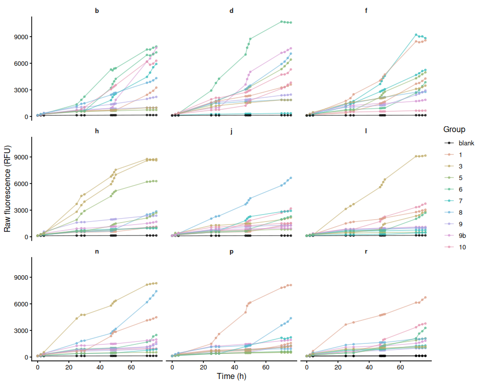
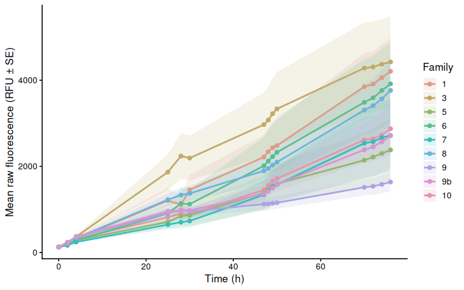
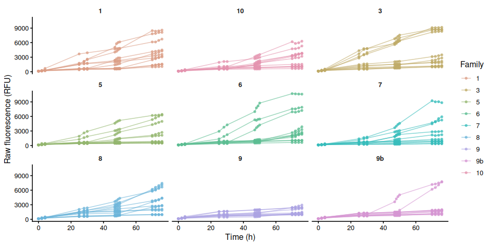
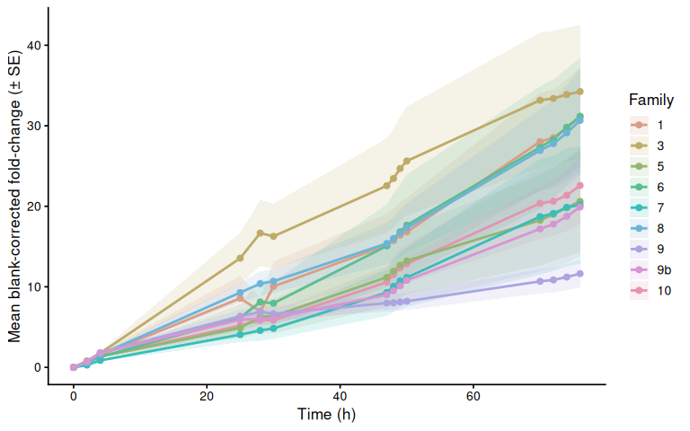
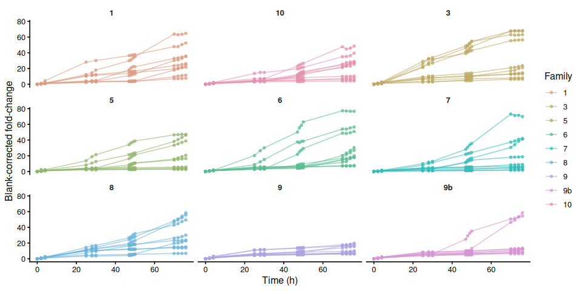
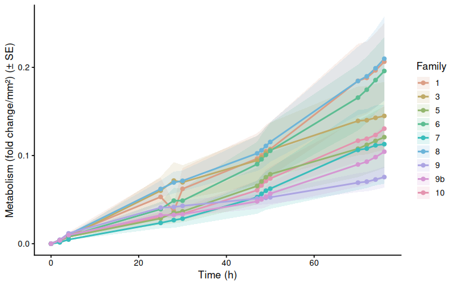
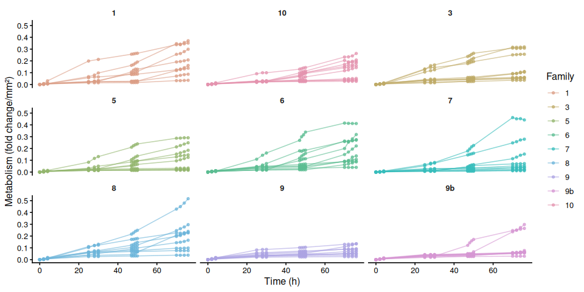
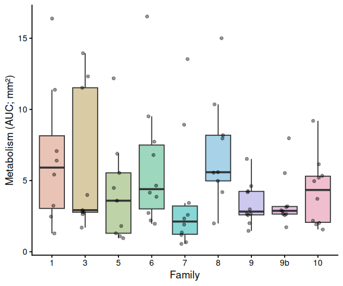

INTRO
This post presents results from resazurin assays conducted on families of Magallana gigas (Pacific oyster) in response to freshwater stress at room temperature (~21°C) over the course of 76hrs.
METHODS
Resazurin assays
11 oysters from each of the nine families were distributed across nine, 12-well plates and submerged in 4mL of resazurin working solution prepared with TAPWATER. Each plate included one well with working solution only as a negative control. Plates were held at room temperature (~21°C) for 76hrs, and fluorescence was measured periodically using a Synergy HTX (Agilent) plate reader.
Oyster measurements
Oyster area was measured using ImageJ. Oysters were photographed in their plates with a ruler for scale, and the area of each oyster was calculated using ImageJ “Measure Particles” tool.
Data analysis
Analysis was conducted in this R Markdown file:
The rendered markdown is below.
RESULTS
Size-normalized metabolic rate (resazurin fluorescence fold-change per mm² body area, integrated as AUC over ~76 h) did not differ significantly among the nine USDA M. gigas families exposed to freshwater stress at room temperature.
No Tukey-adjusted pairwise comparisons on AUC reached significance. Despite the non-significant overall AUC result, the time-series linear mixed model revealed significant pairwise differences emerging at the later timepoints: at 70–76 h, families 1, 6, and 8 had significantly higher metabolism than family 9 (e.g., family 8 vs. family 9 at 76 h: p = 0.0012), and family 8 also differed significantly from family 9b at 74–76 h.
1 Background
Juvenile oysters from nine USDA families were submerged in 4 mL of room temperature resazurin working solution prepared with TAPWATER in 12-well plates and held at room temperature (~21C) for a total duration of 76hrs. At each designated timepoints, fluorescence was measured using a Synergy HTX (Agilent) plate reader.
See Resazurin/data/20260511-mgig-freshwater-RT/README.md for full experimental notes.
1.1 Expected inputs
| Path | Description |
|---|---|
Resazurin/data/20260511-mgig-freshwater-RT/plate-*-T*.txt |
Plate reader fluorescence exports (one file per plate per timepoint) |
Resazurin/data/20260511-mgig-freshwater-RT/layout.csv |
Well metadata: plate ID, well ID, blank flag, family groups, sample IDs, area measurements (mm², from ImageJ) |
1.2 Expected outputs
All outputs are written to Resazurin/outputs/01.00-resazurin-20260511-mgig-freshwater-RT/.
| File | Description |
|---|---|
figures/ |
All plots generated by this script |
auc_all_metrics.csv |
Per-individual AUC values for every active measurement metric |
auc_summary.csv |
Group-level AUC summary statistics (mean, SD, SE, median) |
metabolism.csv |
Full per-well per-timepoint metabolism data frame |
pairwise_stats.csv |
Tukey-adjusted pairwise comparisons from AUC linear models |
2 Setup
2.1 Knitr options
knitr::opts_chunk$set(
echo = TRUE, # Display code chunks
eval = TRUE, # Evaluate code chunks
warning = FALSE, # Hide warnings
message = FALSE, # Hide messages
comment = "", # Prevents appending '##' to beginning of lines in code output
results = 'hold' # Holds output so it's all printed together after code chunk
)2.2 Load libraries
library(tidyverse)
library(pracma) # trapz()
library(lme4)
library(lmerTest)
library(emmeans)
library(multcompView)
library(cowplot)
library(colorspace) # qualitative_hcl() for large palettes3 Helper Functions
normalize_well_id <- function(x) {
x <- toupper(trimws(x))
valid <- str_detect(x, "^[A-Z]+[0-9]+$")
out <- rep(NA_character_, length(x))
if (!any(valid)) return(out)
m <- str_match(x[valid], "^([A-Z]+)([0-9]+)$")
out[valid] <- paste0(m[, 2], as.integer(m[, 3]))
out
}
parse_time_hr <- function(path) {
hit <- str_match(basename(path),
"(?i)-T([0-9]+(?:\\.[0-9]+)?)\\.txt$")
as.numeric(hit[, 2])
}
parse_plate_id <- function(path) {
hit <- str_match(basename(path),
"(?i)^plate-([A-Za-z0-9-]+)-T[0-9]+(?:\\.[0-9]+)?\\.txt$")
id <- hit[, 2]
ifelse(is.na(id), "unknown", id)
}
extract_results_block <- function(lines) {
results_idx <- which(trimws(lines) == "Results")
if (length(results_idx) == 0) stop("No Results section found")
idx <- results_idx[1]
header_tokens <- str_split(lines[idx + 1], "\\t")[[1]] |> trimws()
col_ids <- header_tokens[
header_tokens != "" & str_detect(header_tokens, "^[0-9]+$")]
j <- idx + 2
data_lines <- character()
while (j <= length(lines)) {
line <- lines[j]
if (trimws(line) == "") break
if (!str_detect(line, "^[A-Za-z]\\t")) break
data_lines <- c(data_lines, line)
j <- j + 1
}
list(col_ids = col_ids, data_lines = data_lines)
}
parse_plate_export <- function(path) {
lines <- readLines(path, warn = FALSE)
res <- extract_results_block(lines)
map_dfr(res$data_lines, function(line) {
tokens <- str_split(line, "\\t")[[1]] |> trimws()
tokens <- tokens[tokens != ""]
row_letter <- tokens[1]
nums <- suppressWarnings(as.numeric(tokens[-1]))
valid_idx <- which(!is.na(nums))
if (length(valid_idx) == 0) return(tibble())
vals <- nums[valid_idx]
n <- min(length(vals), length(res$col_ids))
tibble(
row_id = toupper(row_letter),
col_id = as.integer(res$col_ids[seq_len(n)]),
well_id = normalize_well_id(
paste0(toupper(row_letter), res$col_ids[seq_len(n)])),
value = vals[seq_len(n)]
)
}) %>%
mutate(
plate_id = str_to_lower(parse_plate_id(path)),
time_hr = parse_time_hr(path)
)
}
trapezoid_auc <- function(time_hr, value) {
ok <- is.finite(time_hr) & is.finite(value)
t <- time_hr[ok]
v <- value[ok]
if (length(t) < 2) return(NA_real_)
ord <- order(t)
t <- t[ord]; v <- v[ord]
sum(diff(t) * (head(v, -1) + tail(v, -1)) / 2)
}
# Shared helper: extract display unit string from a measurement column name.
# e.g. "area_mm2_measurement" -> "mm²", "weight_mg_measurement" -> "mg"
parse_meas_unit <- function(col_name) {
unit_raw <- col_name |>
str_remove("^metabolism_per_") |>
str_remove("_measurement$") |>
str_extract("[^_]+$")
case_when(
unit_raw == "mm2" ~ "mm²",
unit_raw == "cm2" ~ "cm²",
unit_raw == "mm3" ~ "mm³",
unit_raw == "cm3" ~ "cm³",
TRUE ~ unit_raw
)
}
# y-axis label for metabolism line plots: "fold change/mm²"
metabolism_y_label <- function(col_name) {
paste0("Metabolism (fold change/", parse_meas_unit(col_name), ")")
}
# y-axis label for AUC box plots: "Metabolism (AUC; mm²)"
auc_y_label <- function(metric_name) {
paste0("Metabolism (AUC; ", parse_meas_unit(metric_name), ")")
}4 Load Data
4.1 Plate export files
proj_root <- rprojroot::find_rstudio_root_file()
data_dir <- file.path(proj_root, "Resazurin", "data", "20260511-mgig-freshwater-RT")
out_dir <- file.path(proj_root, "Resazurin", "outputs",
"01.00-resazurin-20260511-mgig-freshwater-RT")
fig_dir <- file.path(out_dir, "figures")
dir.create(fig_dir, recursive = TRUE, showWarnings = FALSE)
dir.create(out_dir, recursive = TRUE, showWarnings = FALSE)
plate_files <- list.files(
data_dir,
pattern = "(?i)^plate-.*-T[0-9]+(?:\\.[0-9]+)?\\.txt$",
full.names = TRUE
)
plate_raw <- map_dfr(plate_files, function(path) {
tryCatch(parse_plate_export(path),
error = function(e) {
message("Parse error in ", basename(path), ": ", e$message)
tibble()
})
})
str(plate_raw)tibble [1,500 × 6] (S3: tbl_df/tbl/data.frame)
$ row_id : chr [1:1500] "A" "A" "A" "A" ...
$ col_id : int [1:1500] 1 2 3 4 1 2 3 4 1 2 ...
$ well_id : chr [1:1500] "A1" "A2" "A3" "A4" ...
$ value : num [1:1500] 136 126 129 126 129 130 139 126 138 112 ...
$ plate_id: chr [1:1500] "b" "b" "b" "b" ...
$ time_hr : num [1:1500] 0 0 0 0 0 0 0 0 0 0 ...4.2 Plate consistency check
Checks that every plate has the same number of wells at every timepoint. The expected well count is the mode across all plate × timepoint reads. Any plate with at least one deviating read is flagged and dropped entirely before any further analysis — removing only the aberrant timepoint would break the fold-change baseline calculation.
well_counts <- plate_raw %>%
group_by(plate_id, time_hr) %>%
summarise(n_wells = n_distinct(well_id), .groups = "drop")
expected_n_wells <- as.integer(
names(which.max(table(well_counts$n_wells)))
)
inconsistent_reads <- well_counts %>%
filter(n_wells != expected_n_wells) %>%
arrange(plate_id, time_hr)
inconsistent_plate_ids <- unique(inconsistent_reads$plate_id)
if (nrow(inconsistent_reads) > 0) {
cat("**Plate consistency check FAILED.**",
"Expected", expected_n_wells, "wells per plate-timepoint read.",
length(inconsistent_plate_ids),
"plate(s) have at least one deviating read and are excluded",
"from all analyses:\n\n")
cat(knitr::kable(
inconsistent_reads,
col.names = c("Plate", "Time (h)", "Wells read"),
caption = paste("Expected:", expected_n_wells, "wells per read")
), sep = "\n")
cat("\n")
plate_raw <- plate_raw %>%
filter(!plate_id %in% inconsistent_plate_ids)
message(length(inconsistent_plate_ids),
" plate(s) removed from plate_raw: ",
paste(inconsistent_plate_ids, collapse = ", "))
} else {
cat("Plate consistency check passed: all",
n_distinct(well_counts$plate_id), "plates have",
expected_n_wells, "wells at every timepoint.\n")
}Plate consistency check passed: all 9 plates have 12 wells at every timepoint.
4.3 Layout file
layout_path <- file.path(data_dir, "layout.csv")
layout_raw <- read_csv(layout_path,
col_types = cols(.default = "c"),
show_col_types = FALSE)
# Standardise column names to snake_case
names(layout_raw) <- names(layout_raw) |>
str_to_lower() |>
str_replace_all("[^a-z0-9]+", "_") |>
str_replace_all("_+", "_") |>
str_replace("_$", "")
# Normalise plate_id to match plate file ids (strip "plate-" prefix)
layout_clean <- layout_raw %>%
mutate(
plate_id = str_remove(str_to_lower(plate_id), "^plate-"),
well_id = normalize_well_id(plate_well),
is_blank = if ("is_blank" %in% names(layout_raw))
toupper(trimws(is_blank)) %in% c("TRUE", "T", "1", "YES", "Y")
else
FALSE
)
found_exclude_col <- intersect(
c("exclude_from_analysis", "exclude", "omit", "not_analyzed"),
names(layout_clean)
)[1]
layout_clean <- layout_clean %>%
mutate(
exclude_from_analysis = if (!is.na(found_exclude_col))
toupper(trimws(.data[[found_exclude_col]])) %in%
c("TRUE", "T", "1", "YES", "Y")
else
FALSE
)
# Identify measurement columns and group columns
measurement_cols <- names(layout_clean)[
str_detect(names(layout_clean), "_measurement$")]
group_cols <- names(layout_clean)[
str_detect(names(layout_clean), "_group$")]
# Cast measurement columns to numeric
layout_clean <- layout_clean %>%
mutate(across(all_of(measurement_cols),
~ suppressWarnings(as.numeric(.x))))
# Determine which measurement columns actually contain finite data
active_meas_cols <- measurement_cols[
sapply(measurement_cols, function(col)
any(is.finite(layout_clean[[col]]), na.rm = TRUE))]
# Normalise group values to lowercase so they match colour scale definitions
layout_clean <- layout_clean %>%
mutate(across(all_of(group_cols),
~ str_to_lower(trimws(as.character(.x)))))
message("Group columns: ", paste(group_cols, collapse = ", "))
message("Active measurement columns: ",
paste(active_meas_cols, collapse = ", "))
str(layout_clean)tibble [108 × 13] (S3: tbl_df/tbl/data.frame)
$ plate_id : chr [1:108] "b" "b" "b" "b" ...
$ plate_well : chr [1:108] "A01" "A02" "A03" "A04" ...
$ is_blank : logi [1:108] FALSE FALSE FALSE FALSE FALSE FALSE ...
$ family_id_group : chr [1:108] "6" "5" "9b" "1" ...
$ sample_id_group : chr [1:108] "1" "56" "67" "78" ...
$ treatment_group : chr [1:108] NA NA NA NA ...
$ width_mm_measurement : num [1:108] NA NA NA NA NA NA NA NA NA NA ...
$ length_mm_measurement: num [1:108] NA NA NA NA NA NA NA NA NA NA ...
$ weight_mg_measurement: num [1:108] NA NA NA NA NA NA NA NA NA NA ...
$ area_mm2_measurement : num [1:108] 209 180 197 151 171 ...
$ imagej_id : chr [1:108] "2" "3" "5" "5" ...
$ well_id : chr [1:108] "A1" "A2" "A3" "A4" ...
$ exclude_from_analysis: logi [1:108] FALSE FALSE FALSE FALSE FALSE FALSE ...5 Merge Plate Data with Layout
dat <- plate_raw %>%
left_join(
layout_clean %>%
select(plate_id, well_id, is_blank, exclude_from_analysis,
any_of("exclude_reason"),
all_of(group_cols), all_of(measurement_cols)),
by = c("plate_id", "well_id")
) %>%
mutate(
is_blank = replace_na(is_blank, FALSE),
exclude_from_analysis = replace_na(exclude_from_analysis, FALSE)
)
str(dat)tibble [1,500 × 15] (S3: tbl_df/tbl/data.frame)
$ row_id : chr [1:1500] "A" "A" "A" "A" ...
$ col_id : int [1:1500] 1 2 3 4 1 2 3 4 1 2 ...
$ well_id : chr [1:1500] "A1" "A2" "A3" "A4" ...
$ value : num [1:1500] 136 126 129 126 129 130 139 126 138 112 ...
$ plate_id : chr [1:1500] "b" "b" "b" "b" ...
$ time_hr : num [1:1500] 0 0 0 0 0 0 0 0 0 0 ...
$ is_blank : logi [1:1500] FALSE FALSE FALSE FALSE FALSE FALSE ...
$ exclude_from_analysis: logi [1:1500] FALSE FALSE FALSE FALSE FALSE FALSE ...
$ family_id_group : chr [1:1500] "6" "5" "9b" "1" ...
$ sample_id_group : chr [1:1500] "1" "56" "67" "78" ...
$ treatment_group : chr [1:1500] NA NA NA NA ...
$ width_mm_measurement : num [1:1500] NA NA NA NA NA NA NA NA NA NA ...
$ length_mm_measurement: num [1:1500] NA NA NA NA NA NA NA NA NA NA ...
$ weight_mg_measurement: num [1:1500] NA NA NA NA NA NA NA NA NA NA ...
$ area_mm2_measurement : num [1:1500] 209 180 197 151 171 ...6 Raw Fluorescence
6.1 Data frame
# Wells in the plate reader output that have no layout entry get all-NA group
# columns after the join. Keep only wells assigned to at least one group.
active_gc <- intersect(group_cols, names(dat))
raw_df <- dat %>%
filter(
!is_blank,
if (length(active_gc) > 0)
if_any(all_of(active_gc), ~ !is.na(.))
else
TRUE
) %>%
mutate(
trace_id = if_else(
!is.na(sample_id_group) & trimws(as.character(sample_id_group)) != "",
as.character(sample_id_group),
paste(plate_id, well_id, sep = "_")
)
)
families <- str_sort(unique(na.omit(raw_df$family_id_group)), numeric = TRUE)
treatments <- sort(unique(na.omit(raw_df$treatment_group)))
n_fam <- length(families)
n_trt <- length(treatments)
# Palette strategy:
# <= 7 groups : Okabe-Ito (gold standard for colorblind-safe figures).
# > 7 groups : colorspace::qualitative_hcl("Dynamic") scales to any N
# using perceptually uniform HCL space — no colour collisions.
# Black (#000000) is excluded from both and reserved for blank wells.
okabe_ito_7 <- c(
"#E69F00", "#56B4E9", "#009E73", "#F0E442",
"#0072B2", "#D55E00", "#CC79A7"
)
make_palette <- function(n) {
if (n == 0L) return(character(0))
if (n <= length(okabe_ito_7)) return(okabe_ito_7[seq_len(n)])
colorspace::qualitative_hcl(n, palette = "Dynamic")
}
all_colours <- make_palette(n_fam + n_trt)
fam_colours <- setNames(all_colours[seq_len(n_fam)], families)
trt_colours <- setNames(all_colours[n_fam + seq_len(n_trt)], treatments)
lty_pool <- c("solid", "dashed", "dotted", "dotdash", "longdash")
trt_linetypes <- setNames(
lty_pool[(seq_len(n_trt) - 1L) %% length(lty_pool) + 1L],
treatments
)
plate_well_colours <- c(blank = "black", fam_colours)
has_trt <- n_trt > 0
str(raw_df)tibble [1,376 × 16] (S3: tbl_df/tbl/data.frame)
$ row_id : chr [1:1376] "A" "A" "A" "A" ...
$ col_id : int [1:1376] 1 2 3 4 1 2 3 4 1 3 ...
$ well_id : chr [1:1376] "A1" "A2" "A3" "A4" ...
$ value : num [1:1376] 136 126 129 126 129 130 139 126 138 126 ...
$ plate_id : chr [1:1376] "b" "b" "b" "b" ...
$ time_hr : num [1:1376] 0 0 0 0 0 0 0 0 0 0 ...
$ is_blank : logi [1:1376] FALSE FALSE FALSE FALSE FALSE FALSE ...
$ exclude_from_analysis: logi [1:1376] FALSE FALSE FALSE FALSE FALSE FALSE ...
$ family_id_group : chr [1:1376] "6" "5" "9b" "1" ...
$ sample_id_group : chr [1:1376] "1" "56" "67" "78" ...
$ treatment_group : chr [1:1376] NA NA NA NA ...
$ width_mm_measurement : num [1:1376] NA NA NA NA NA NA NA NA NA NA ...
$ length_mm_measurement: num [1:1376] NA NA NA NA NA NA NA NA NA NA ...
$ weight_mg_measurement: num [1:1376] NA NA NA NA NA NA NA NA NA NA ...
$ area_mm2_measurement : num [1:1376] 209 180 197 151 171 ...
$ trace_id : chr [1:1376] "1" "56" "67" "78" ...6.2 Raw fluorescence by plate (including blanks)
p_raw_plates <- dat %>%
filter(is.finite(time_hr), is.finite(value)) %>%
mutate(
colour_group = if_else(is_blank, "blank",
coalesce(family_id_group, "sample")),
trace_id = paste(plate_id, well_id, sep = "_")
) %>%
ggplot(aes(x = time_hr, y = value,
group = trace_id, colour = colour_group)) +
geom_line(alpha = 0.6) +
geom_point(size = 1, alpha = 0.7) +
facet_wrap(~ plate_id) +
scale_colour_manual(
values = plate_well_colours,
name = "Group",
breaks = names(plate_well_colours),
na.value = "grey80"
) +
labs(x = "Time (h)", y = "Raw fluorescence (RFU)") +
theme_classic(base_size = 12) +
theme(strip.background = element_blank(),
strip.text = element_text(face = "bold"))
p_raw_plates
ggsave(file.path(fig_dir, "raw_fluor_by_plate.png"),
p_raw_plates, width = 10, height = 8)6.3 Mean raw fluorescence by family
raw_family_summary <- raw_df %>%
filter(!is.na(family_id_group), !exclude_from_analysis) %>%
group_by(family_id_group, treatment_group, time_hr) %>%
summarise(
mean_fluor = mean(value, na.rm = TRUE),
se_fluor = sd(value, na.rm = TRUE) /
sqrt(sum(!is.na(value))),
n = sum(!is.na(value)),
.groups = "drop"
) %>%
mutate(group_var = if (has_trt)
paste(family_id_group, treatment_group, sep = ".")
else
family_id_group)
p_raw_mean <- ggplot(raw_family_summary,
aes(x = time_hr, y = mean_fluor,
colour = family_id_group,
group = group_var)) +
geom_ribbon(aes(ymin = mean_fluor - se_fluor,
ymax = mean_fluor + se_fluor,
fill = family_id_group),
alpha = 0.15, colour = NA) +
geom_line(
mapping = if (has_trt) aes(linetype = treatment_group) else NULL,
linewidth = 1) +
geom_point(size = 2) +
scale_colour_manual(values = fam_colours, name = "Family",
breaks = families) +
scale_fill_manual(values = fam_colours, name = "Family",
breaks = families) +
labs(x = "Time (h)", y = "Mean raw fluorescence (RFU ± SE)") +
theme_classic(base_size = 13) +
if (has_trt) scale_linetype_manual(values = trt_linetypes, name = "Treatment") else NULL
p_raw_mean
ggsave(file.path(fig_dir, "raw_mean_by_family.png"),
p_raw_mean, width = 8, height = 5)6.4 Individual raw fluorescence traces by family
p_raw_by_family <- raw_df %>%
filter(!is.na(family_id_group)) %>%
ggplot(aes(x = time_hr, y = value, group = trace_id,
colour = .data[[if (has_trt) "treatment_group" else "family_id_group"]])) +
geom_line(alpha = 0.6) +
geom_point(size = 1.2, alpha = 0.7) +
facet_wrap(~ family_id_group) +
scale_colour_manual(
values = if (has_trt) trt_colours else fam_colours,
name = if (has_trt) "Treatment" else "Family",
breaks = if (has_trt) treatments else families) +
labs(x = "Time (h)", y = "Raw fluorescence (RFU)") +
theme_classic(base_size = 12) +
theme(strip.background = element_blank(),
strip.text = element_text(face = "bold"))
p_raw_by_family
ggsave(file.path(fig_dir, "raw_individual_by_family.png"),
p_raw_by_family, width = 10, height = 5)6.5 Individual raw fluorescence traces by treatment
if (has_trt) {
p_raw_by_treatment <- raw_df %>%
ggplot(aes(x = time_hr, y = value,
group = trace_id, colour = family_id_group)) +
geom_line(alpha = 0.6) +
geom_point(size = 1.2, alpha = 0.7) +
facet_wrap(~ treatment_group) +
scale_colour_manual(values = fam_colours, name = "Family",
breaks = families) +
labs(x = "Time (h)", y = "Raw fluorescence (RFU)") +
theme_classic(base_size = 12) +
theme(strip.background = element_blank(),
strip.text = element_text(face = "bold"))
p_raw_by_treatment
ggsave(file.path(fig_dir, "raw_individual_by_treatment.png"),
p_raw_by_treatment, width = 10, height = 5)
}6.6 Excluded samples
Wells flagged exclude_from_analysis = TRUE appear in the raw fluorescence plots above but are omitted from all analyses that follow.
excluded_wells <- dat %>%
filter(!is_blank, exclude_from_analysis) %>%
mutate(
sample = if_else(
!is.na(sample_id_group) & trimws(as.character(sample_id_group)) != "",
as.character(sample_id_group),
paste(plate_id, well_id, sep = "_")
)
) %>%
select(plate_id, well_id, sample, family_id_group, treatment_group,
any_of("exclude_reason")) %>%
distinct() %>%
arrange(plate_id, well_id)
if (nrow(excluded_wells) > 0) {
col_names <- c("Plate", "Well", "Sample", "Family", "Treatment")
if ("exclude_reason" %in% names(excluded_wells))
col_names <- c(col_names, "Reason")
cat(knitr::kable(excluded_wells, col.names = col_names), sep = "\n")
} else {
cat("No wells are excluded from analysis.\n")
}No wells are excluded from analysis.
7 Blank Correction via Fold-Change Normalization
T0 is the earliest timepoint present in the dataset (not necessarily 0 hr). Sample fold-change is expressed relative to each individual’s T0 reading, resolved by sample_id_group when that column is populated — allowing the same animal to be tracked across plates — or by plate_id + well_id when no sample IDs exist (backward-compatible with single-plate, multi-timepoint designs). Blank fold-change is the per-plate mean blank RFU at each timepoint divided by the pooled mean blank RFU at T0. Subtracting blank fold-change from sample fold-change removes background fluorescence drift; all samples start at exactly 0 at T0 by construction.
7.1 Step 1 – Identify T0 and compute per-sample fold-change
# T0 = earliest timepoint present in the dataset
t0_time <- min(dat$time_hr[is.finite(dat$time_hr)], na.rm = TRUE)
message("T0 timepoint: ", t0_time, " hr")
# T0 reference value per individual.
# Resolved by sample_id_group (cross-plate tracking) when available;
# falls back to plate+well for layouts without explicit sample IDs.
t0_all <- dat %>%
filter(time_hr == t0_time, !is_blank, is.finite(value)) %>%
mutate(sample_key = if_else(
!is.na(sample_id_group) & trimws(as.character(sample_id_group)) != "",
as.character(sample_id_group),
paste(plate_id, well_id, sep = "_")
)) %>%
group_by(sample_key) %>%
summarise(value_t0 = mean(value, na.rm = TRUE), .groups = "drop")
dat_fc <- dat %>%
mutate(sample_key = if_else(
!is_blank &
!is.na(sample_id_group) & trimws(as.character(sample_id_group)) != "",
as.character(sample_id_group),
paste(plate_id, well_id, sep = "_")
)) %>%
left_join(t0_all, by = "sample_key") %>%
mutate(fold_change = if_else(
!is_blank & is.finite(value_t0) & value_t0 > 0,
value / value_t0,
NA_real_
))
str(dat_fc)tibble [1,500 × 18] (S3: tbl_df/tbl/data.frame)
$ row_id : chr [1:1500] "A" "A" "A" "A" ...
$ col_id : int [1:1500] 1 2 3 4 1 2 3 4 1 2 ...
$ well_id : chr [1:1500] "A1" "A2" "A3" "A4" ...
$ value : num [1:1500] 136 126 129 126 129 130 139 126 138 112 ...
$ plate_id : chr [1:1500] "b" "b" "b" "b" ...
$ time_hr : num [1:1500] 0 0 0 0 0 0 0 0 0 0 ...
$ is_blank : logi [1:1500] FALSE FALSE FALSE FALSE FALSE FALSE ...
$ exclude_from_analysis: logi [1:1500] FALSE FALSE FALSE FALSE FALSE FALSE ...
$ family_id_group : chr [1:1500] "6" "5" "9b" "1" ...
$ sample_id_group : chr [1:1500] "1" "56" "67" "78" ...
$ treatment_group : chr [1:1500] NA NA NA NA ...
$ width_mm_measurement : num [1:1500] NA NA NA NA NA NA NA NA NA NA ...
$ length_mm_measurement: num [1:1500] NA NA NA NA NA NA NA NA NA NA ...
$ weight_mg_measurement: num [1:1500] NA NA NA NA NA NA NA NA NA NA ...
$ area_mm2_measurement : num [1:1500] 209 180 197 151 171 ...
$ sample_key : chr [1:1500] "1" "56" "67" "78" ...
$ value_t0 : num [1:1500] 136 126 129 126 129 130 139 126 138 NA ...
$ fold_change : num [1:1500] 1 1 1 1 1 1 1 1 1 NA ...7.2 Step 2 – Blank fold-change reference per plate per timepoint
# Pooled mean blank RFU at T0 across all T0 plates
mean_blank_t0 <- dat %>%
filter(is_blank, time_hr == t0_time, is.finite(value)) %>%
pull(value) %>%
mean(na.rm = TRUE)
if (!is.finite(mean_blank_t0))
message("No blank readings found at T0 (", t0_time,
" hr); blank correction will produce NA.")
# Per-plate per-timepoint mean blank expressed as fold-change relative to T0
blank_fc_ref <- dat %>%
filter(is_blank, is.finite(value)) %>%
group_by(plate_id, time_hr) %>%
summarise(mean_blank_rfu = mean(value, na.rm = TRUE), .groups = "drop") %>%
mutate(mean_blank_fc = mean_blank_rfu / mean_blank_t0)
str(blank_fc_ref)tibble [111 × 4] (S3: tbl_df/tbl/data.frame)
$ plate_id : chr [1:111] "b" "b" "b" "b" ...
$ time_hr : num [1:111] 0 2 4 25 28 30 47 48 49 50 ...
$ mean_blank_rfu: num [1:111] 112 117 118 144 143 139 153 150 151 151 ...
$ mean_blank_fc : num [1:111] 1.03 1.07 1.08 1.32 1.31 ...7.3 Step 3 – Subtract blank fold-change from sample fold-change
samples <- dat_fc %>%
filter(!is_blank, !exclude_from_analysis) %>%
mutate(
trace_id = if_else(
!is.na(sample_id_group) & trimws(as.character(sample_id_group)) != "",
as.character(sample_id_group),
paste(plate_id, well_id, sep = "_")
)
) %>%
left_join(blank_fc_ref, by = c("plate_id", "time_hr")) %>%
mutate(corrected_fc = fold_change - mean_blank_fc)
str(samples)tibble [1,376 × 22] (S3: tbl_df/tbl/data.frame)
$ row_id : chr [1:1376] "A" "A" "A" "A" ...
$ col_id : int [1:1376] 1 2 3 4 1 2 3 4 1 3 ...
$ well_id : chr [1:1376] "A1" "A2" "A3" "A4" ...
$ value : num [1:1376] 136 126 129 126 129 130 139 126 138 126 ...
$ plate_id : chr [1:1376] "b" "b" "b" "b" ...
$ time_hr : num [1:1376] 0 0 0 0 0 0 0 0 0 0 ...
$ is_blank : logi [1:1376] FALSE FALSE FALSE FALSE FALSE FALSE ...
$ exclude_from_analysis: logi [1:1376] FALSE FALSE FALSE FALSE FALSE FALSE ...
$ family_id_group : chr [1:1376] "6" "5" "9b" "1" ...
$ sample_id_group : chr [1:1376] "1" "56" "67" "78" ...
$ treatment_group : chr [1:1376] NA NA NA NA ...
$ width_mm_measurement : num [1:1376] NA NA NA NA NA NA NA NA NA NA ...
$ length_mm_measurement: num [1:1376] NA NA NA NA NA NA NA NA NA NA ...
$ weight_mg_measurement: num [1:1376] NA NA NA NA NA NA NA NA NA NA ...
$ area_mm2_measurement : num [1:1376] 209 180 197 151 171 ...
$ sample_key : chr [1:1376] "1" "56" "67" "78" ...
$ value_t0 : num [1:1376] 136 126 129 126 129 130 139 126 138 126 ...
$ fold_change : num [1:1376] 1 1 1 1 1 1 1 1 1 1 ...
$ trace_id : chr [1:1376] "1" "56" "67" "78" ...
$ mean_blank_rfu : num [1:1376] 112 112 112 112 112 112 112 112 112 112 ...
$ mean_blank_fc : num [1:1376] 1.03 1.03 1.03 1.03 1.03 ...
$ corrected_fc : num [1:1376] -0.0286 -0.0286 -0.0286 -0.0286 -0.0286 ...8 Blank-Corrected Fold-Change
8.1 Mean by family
bc_fc_summary <- samples %>%
filter(!is.na(family_id_group), !exclude_from_analysis) %>%
group_by(family_id_group, treatment_group, time_hr) %>%
summarise(
mean_val = mean(corrected_fc, na.rm = TRUE),
se_val = sd(corrected_fc, na.rm = TRUE) /
sqrt(sum(!is.na(corrected_fc))),
n = sum(!is.na(corrected_fc)),
.groups = "drop"
) %>%
mutate(group_var = if (has_trt)
paste(family_id_group, treatment_group, sep = ".")
else
family_id_group)
p_bc_fc_mean <- ggplot(bc_fc_summary,
aes(x = time_hr, y = mean_val,
colour = family_id_group,
group = group_var)) +
geom_ribbon(aes(ymin = mean_val - se_val,
ymax = mean_val + se_val,
fill = family_id_group),
alpha = 0.15, colour = NA) +
geom_line(
mapping = if (has_trt) aes(linetype = treatment_group) else NULL,
linewidth = 1) +
geom_point(size = 2) +
scale_colour_manual(values = fam_colours, name = "Family",
breaks = families) +
scale_fill_manual(values = fam_colours, name = "Family",
breaks = families) +
labs(x = "Time (h)",
y = "Mean blank-corrected fold-change (± SE)") +
theme_classic(base_size = 13) +
if (has_trt) scale_linetype_manual(values = trt_linetypes, name = "Treatment") else NULL
p_bc_fc_mean
ggsave(file.path(fig_dir, "blank_corrected_fc_mean_by_family.png"),
p_bc_fc_mean, width = 8, height = 5)8.2 Individual traces by family
p_bc_fc_by_family <- samples %>%
filter(!is.na(family_id_group)) %>%
ggplot(aes(x = time_hr, y = corrected_fc, group = trace_id,
colour = .data[[if (has_trt) "treatment_group" else "family_id_group"]])) +
geom_line(alpha = 0.6) +
geom_point(size = 1.2, alpha = 0.7) +
facet_wrap(~ family_id_group) +
scale_colour_manual(
values = if (has_trt) trt_colours else fam_colours,
name = if (has_trt) "Treatment" else "Family",
breaks = if (has_trt) treatments else families) +
labs(x = "Time (h)", y = "Blank-corrected fold-change") +
theme_classic(base_size = 12) +
theme(strip.background = element_blank(),
strip.text = element_text(face = "bold"))
p_bc_fc_by_family
ggsave(file.path(fig_dir, "blank_corrected_fc_by_family.png"),
p_bc_fc_by_family, width = 10, height = 5)8.3 Individual blank-corrected fold-change traces by treatment
if (has_trt) {
p_bc_fc_by_treatment <- samples %>%
ggplot(aes(x = time_hr, y = corrected_fc,
group = trace_id, colour = family_id_group)) +
geom_line(alpha = 0.6) +
geom_point(size = 1.2, alpha = 0.7) +
facet_wrap(~ treatment_group) +
scale_colour_manual(values = fam_colours, name = "Family",
breaks = families) +
labs(x = "Time (h)", y = "Blank-corrected fold-change") +
theme_classic(base_size = 12) +
theme(strip.background = element_blank(),
strip.text = element_text(face = "bold"))
p_bc_fc_by_treatment
ggsave(file.path(fig_dir, "blank_corrected_fc_by_treatment.png"),
p_bc_fc_by_treatment, width = 10, height = 5)
}9 Metabolism (Size-Normalised Fold-Change)
Blank-corrected fold-change divided by each active measurement column. This is “metabolism” as defined in Huffmyer et al.
if (length(active_meas_cols) == 0) {
message("No active measurement columns: skipping metabolism calculation.")
metabolism_df <- tibble()
} else {
metabolism_df <- samples
for (mc in active_meas_cols) {
out_col <- paste0("metabolism_per_", mc)
metabolism_df <- metabolism_df %>%
mutate(!!out_col := if_else(
is.finite(.data[[mc]]) & .data[[mc]] > 0 &
is.finite(corrected_fc),
corrected_fc / .data[[mc]],
NA_real_
))
}
}
str(metabolism_df)tibble [1,376 × 23] (S3: tbl_df/tbl/data.frame)
$ row_id : chr [1:1376] "A" "A" "A" "A" ...
$ col_id : int [1:1376] 1 2 3 4 1 2 3 4 1 3 ...
$ well_id : chr [1:1376] "A1" "A2" "A3" "A4" ...
$ value : num [1:1376] 136 126 129 126 129 130 139 126 138 126 ...
$ plate_id : chr [1:1376] "b" "b" "b" "b" ...
$ time_hr : num [1:1376] 0 0 0 0 0 0 0 0 0 0 ...
$ is_blank : logi [1:1376] FALSE FALSE FALSE FALSE FALSE FALSE ...
$ exclude_from_analysis : logi [1:1376] FALSE FALSE FALSE FALSE FALSE FALSE ...
$ family_id_group : chr [1:1376] "6" "5" "9b" "1" ...
$ sample_id_group : chr [1:1376] "1" "56" "67" "78" ...
$ treatment_group : chr [1:1376] NA NA NA NA ...
$ width_mm_measurement : num [1:1376] NA NA NA NA NA NA NA NA NA NA ...
$ length_mm_measurement : num [1:1376] NA NA NA NA NA NA NA NA NA NA ...
$ weight_mg_measurement : num [1:1376] NA NA NA NA NA NA NA NA NA NA ...
$ area_mm2_measurement : num [1:1376] 209 180 197 151 171 ...
$ sample_key : chr [1:1376] "1" "56" "67" "78" ...
$ value_t0 : num [1:1376] 136 126 129 126 129 130 139 126 138 126 ...
$ fold_change : num [1:1376] 1 1 1 1 1 1 1 1 1 1 ...
$ trace_id : chr [1:1376] "1" "56" "67" "78" ...
$ mean_blank_rfu : num [1:1376] 112 112 112 112 112 112 112 112 112 112 ...
$ mean_blank_fc : num [1:1376] 1.03 1.03 1.03 1.03 1.03 ...
$ corrected_fc : num [1:1376] -0.0286 -0.0286 -0.0286 -0.0286 -0.0286 ...
$ metabolism_per_area_mm2_measurement: num [1:1376] -0.000137 -0.000159 -0.000145 -0.000189 -0.000167 ...9.1 Mean metabolism by family
if (nrow(metabolism_df) > 0) {
metab_cols <- paste0("metabolism_per_", active_meas_cols)
for (col in metab_cols) {
if (!col %in% names(metabolism_df)) next
mc_label <- str_remove(col, "^metabolism_per_")
metab_summary <- metabolism_df %>%
filter(!is.na(family_id_group), !exclude_from_analysis) %>%
group_by(family_id_group, treatment_group, time_hr) %>%
summarise(
mean_val = mean(.data[[col]], na.rm = TRUE),
se_val = sd(.data[[col]], na.rm = TRUE) /
sqrt(sum(!is.na(.data[[col]]))),
.groups = "drop"
) %>%
mutate(group_var = if (has_trt)
paste(family_id_group, treatment_group, sep = ".")
else
family_id_group)
p_metab_mean <- ggplot(metab_summary,
aes(x = time_hr, y = mean_val,
colour = family_id_group,
group = group_var)) +
geom_ribbon(aes(ymin = mean_val - se_val,
ymax = mean_val + se_val,
fill = family_id_group),
alpha = 0.15, colour = NA) +
geom_line(
mapping = if (has_trt) aes(linetype = treatment_group) else NULL,
linewidth = 1) +
geom_point(size = 2) +
scale_colour_manual(values = fam_colours, name = "Family",
breaks = families) +
scale_fill_manual(values = fam_colours, name = "Family",
breaks = families) +
labs(x = "Time (h)",
y = paste0(metabolism_y_label(col), " (± SE)")) +
theme_classic(base_size = 13) +
if (has_trt) scale_linetype_manual(values = trt_linetypes, name = "Treatment") else NULL
print(p_metab_mean)
ggsave(
file.path(fig_dir,
paste0("metabolism_mean_", mc_label, ".png")),
p_metab_mean, width = 8, height = 5)
}
}
9.2 Individual metabolism traces by family
if (nrow(metabolism_df) > 0) {
for (col in metab_cols) {
if (!col %in% names(metabolism_df)) next
mc_label <- str_remove(col, "^metabolism_per_")
p_metab_by_family <- metabolism_df %>%
filter(!is.na(family_id_group)) %>%
ggplot(aes(x = time_hr, y = .data[[col]], group = trace_id,
colour = .data[[if (has_trt) "treatment_group" else "family_id_group"]])) +
geom_line(alpha = 0.6) +
geom_point(size = 1.2, alpha = 0.7) +
facet_wrap(~ family_id_group) +
scale_colour_manual(
values = if (has_trt) trt_colours else fam_colours,
name = if (has_trt) "Treatment" else "Family",
breaks = if (has_trt) treatments else families) +
labs(x = "Time (h)", y = metabolism_y_label(col)) +
theme_classic(base_size = 12) +
theme(strip.background = element_blank(),
strip.text = element_text(face = "bold"))
print(p_metab_by_family)
ggsave(
file.path(fig_dir,
paste0("metabolism_individual_", mc_label, "_by_family.png")),
p_metab_by_family, width = 10, height = 5)
if (has_trt) {
p_metab_by_treatment <- ggplot(metabolism_df,
aes(x = time_hr, y = .data[[col]],
group = trace_id, colour = family_id_group)) +
geom_line(alpha = 0.6) +
geom_point(size = 1.2, alpha = 0.7) +
facet_wrap(~ treatment_group) +
scale_colour_manual(values = fam_colours, name = "Family",
breaks = families) +
labs(x = "Time (h)", y = metabolism_y_label(col)) +
theme_classic(base_size = 12) +
theme(strip.background = element_blank(),
strip.text = element_text(face = "bold"))
print(p_metab_by_treatment)
ggsave(
file.path(fig_dir,
paste0("metabolism_individual_", mc_label, "_by_treatment.png")),
p_metab_by_treatment, width = 10, height = 5)
}
}
}
10 Time-Series Statistical Analysis
Linear mixed effects models test the effect of experimental variables on metabolism over time. Individual (sample_id_group) is included as a random intercept to account for repeated measures across timepoints. Type III ANOVA with Satterthwaite’s approximation (lmerTest) assesses significance; post-hoc pairwise comparisons use estimated marginal means (emmeans, Tukey adjustment).
run_ts_stats <- function(df, value_col) {
has_family <- "family_id_group" %in% names(df) &&
length(unique(na.omit(df$family_id_group))) > 1
has_treatment <- "treatment_group" %in% names(df) &&
length(unique(na.omit(df$treatment_group))) > 1
if (!has_family && !has_treatment) return(NULL)
df <- df %>%
filter(is.finite(.data[[value_col]]), is.finite(time_hr)) %>%
mutate(
time_f = factor(time_hr),
individual = factor(trace_id)
)
if (nrow(df) == 0) return(NULL)
if (has_family) df <- df %>% mutate(family = factor(family_id_group))
if (has_treatment) df <- df %>% mutate(treatment = factor(treatment_group))
if (has_family && length(unique(na.omit(df$family))) < 2) return(NULL)
if (has_treatment && length(unique(na.omit(df$treatment))) < 2) return(NULL)
fixed <- if (has_family && has_treatment) {
paste0(value_col, " ~ time_f * family * treatment")
} else if (has_family) {
paste0(value_col, " ~ time_f * family")
} else {
paste0(value_col, " ~ time_f * treatment")
}
model <- lmer(
as.formula(paste0(fixed, " + (1 | individual)")),
data = df
)
anova_res <- anova(model, type = 3, ddf = "Satterthwaite")
# Pairwise comparisons of group combinations at each timepoint
emm_spec <- if (has_family && has_treatment) {
~ family * treatment | time_f
} else if (has_family) {
~ family | time_f
} else {
~ treatment | time_f
}
emm <- emmeans(model, emm_spec)
pairs_res <- as.data.frame(pairs(emm, adjust = "tukey"))
# Main-effect marginal means (collapsed across time)
emm_main <- if (has_family && has_treatment) {
emmeans(model, ~ family * treatment)
} else if (has_family) {
emmeans(model, ~ family)
} else {
emmeans(model, ~ treatment)
}
pairs_main <- as.data.frame(pairs(emm_main, adjust = "tukey"))
list(
model = model,
anova = anova_res,
pairs_by_time = pairs_res,
pairs_main = pairs_main,
has_family = has_family,
has_treatment = has_treatment
)
}
ts_stats <- list()
if (nrow(metabolism_df) > 0) {
for (mc in active_meas_cols) {
col <- paste0("metabolism_per_", mc)
if (col %in% names(metabolism_df))
ts_stats[[col]] <- run_ts_stats(metabolism_df, col)
}
}10.1 Results
for (col in names(ts_stats)) {
res <- ts_stats[[col]]
if (is.null(res)) next
cat("\n\n### Metric:", col, "\n\n")
cat("**Type III ANOVA (Satterthwaite approximation):**\n\n")
cat(knitr::kable(as.data.frame(res$anova), digits = 4, format = "pipe"), sep = "\n")
cat("\n")
cat("**Marginal means – main effects (collapsed across time):**\n\n")
cat(knitr::kable(as.data.frame(res$pairs_main), digits = 4, format = "pipe"), sep = "\n")
cat("\n")
cat("**Pairwise comparisons by timepoint (Tukey):**\n\n")
cat(knitr::kable(as.data.frame(res$pairs_by_time), digits = 4, format = "pipe"), sep = "\n")
cat("\n")
}10.1.1 Metric: metabolism_per_area_mm2_measurement
Type III ANOVA (Satterthwaite approximation):
| Sum Sq | Mean Sq | NumDF | DenDF | F value | Pr(>F) | |
|---|---|---|---|---|---|---|
| time_f | 2.7926 | 0.2148 | 13 | 978.0693 | 107.2897 | 0.0000 |
| family | 0.0238 | 0.0030 | 8 | 76.0041 | 1.4886 | 0.1755 |
| time_f:family | 0.3226 | 0.0031 | 104 | 978.0688 | 1.5492 | 0.0006 |
Marginal means – main effects (collapsed across time):
| contrast | estimate | SE | df | t.ratio | p.value |
|---|---|---|---|---|---|
| 1 - 10 | 0.0353 | 0.0256 | 75.9982 | 1.3782 | 0.9025 |
| 1 - 3 | 0.0136 | 0.0263 | 76.0014 | 0.5193 | 0.9999 |
| 1 - 5 | 0.0362 | 0.0263 | 76.0014 | 1.3776 | 0.9028 |
| 1 - 6 | 0.0077 | 0.0256 | 76.0333 | 0.3009 | 1.0000 |
| 1 - 7 | 0.0439 | 0.0256 | 75.9982 | 1.7115 | 0.7377 |
| 1 - 8 | -0.0045 | 0.0263 | 76.0014 | -0.1696 | 1.0000 |
| 1 - 9 | 0.0521 | 0.0256 | 75.9982 | 2.0316 | 0.5269 |
| 1 - 9b | 0.0473 | 0.0256 | 75.9982 | 1.8467 | 0.6514 |
| 10 - 3 | -0.0217 | 0.0248 | 75.9923 | -0.8736 | 0.9937 |
| 10 - 5 | 0.0008 | 0.0248 | 75.9923 | 0.0341 | 1.0000 |
| 10 - 6 | -0.0276 | 0.0242 | 76.0276 | -1.1426 | 0.9655 |
| 10 - 7 | 0.0085 | 0.0242 | 75.9882 | 0.3535 | 1.0000 |
| 10 - 8 | -0.0398 | 0.0248 | 75.9923 | -1.6022 | 0.8006 |
| 10 - 9 | 0.0167 | 0.0242 | 75.9882 | 0.6930 | 0.9987 |
| 10 - 9b | 0.0120 | 0.0242 | 75.9882 | 0.4969 | 0.9999 |
| 3 - 5 | 0.0225 | 0.0255 | 75.9961 | 0.8847 | 0.9932 |
| 3 - 6 | -0.0059 | 0.0248 | 76.0297 | -0.2386 | 1.0000 |
| 3 - 7 | 0.0302 | 0.0248 | 75.9923 | 1.2177 | 0.9501 |
| 3 - 8 | -0.0181 | 0.0255 | 75.9961 | -0.7101 | 0.9985 |
| 3 - 9 | 0.0384 | 0.0248 | 75.9923 | 1.5482 | 0.8289 |
| 3 - 9b | 0.0337 | 0.0248 | 75.9923 | 1.3572 | 0.9100 |
| 5 - 6 | -0.0285 | 0.0248 | 76.0297 | -1.1462 | 0.9649 |
| 5 - 7 | 0.0077 | 0.0248 | 75.9923 | 0.3100 | 1.0000 |
| 5 - 8 | -0.0406 | 0.0255 | 75.9961 | -1.5949 | 0.8046 |
| 5 - 9 | 0.0159 | 0.0248 | 75.9923 | 0.6405 | 0.9993 |
| 5 - 9b | 0.0112 | 0.0248 | 75.9923 | 0.4495 | 0.9999 |
| 6 - 7 | 0.0362 | 0.0242 | 76.0276 | 1.4960 | 0.8540 |
| 6 - 8 | -0.0122 | 0.0248 | 76.0297 | -0.4899 | 0.9999 |
| 6 - 9 | 0.0444 | 0.0242 | 76.0276 | 1.8355 | 0.6588 |
| 6 - 9b | 0.0396 | 0.0242 | 76.0276 | 1.6394 | 0.7801 |
| 7 - 8 | -0.0483 | 0.0248 | 75.9923 | -1.9463 | 0.5846 |
| 7 - 9 | 0.0082 | 0.0242 | 75.9882 | 0.3395 | 1.0000 |
| 7 - 9b | 0.0035 | 0.0242 | 75.9882 | 0.1434 | 1.0000 |
| 8 - 9 | 0.0565 | 0.0248 | 75.9923 | 2.2768 | 0.3690 |
| 8 - 9b | 0.0518 | 0.0248 | 75.9923 | 2.0858 | 0.4905 |
| 9 - 9b | -0.0047 | 0.0242 | 75.9882 | -0.1961 | 1.0000 |
Pairwise comparisons by timepoint (Tukey):
| contrast | time_f | estimate | SE | df | t.ratio | p.value |
|---|---|---|---|---|---|---|
| 1 - 10 | 0 | 0.0000 | 0.0328 | 197.2519 | 0.0005 | 1.0000 |
| 1 - 3 | 0 | 0.0000 | 0.0336 | 197.2519 | 0.0000 | 1.0000 |
| 1 - 5 | 0 | 0.0000 | 0.0336 | 197.2519 | -0.0003 | 1.0000 |
| 1 - 6 | 0 | 0.0000 | 0.0328 | 197.2519 | -0.0008 | 1.0000 |
| 1 - 7 | 0 | 0.0000 | 0.0328 | 197.2519 | 0.0001 | 1.0000 |
| 1 - 8 | 0 | 0.0000 | 0.0336 | 197.2519 | 0.0010 | 1.0000 |
| 1 - 9 | 0 | 0.0000 | 0.0328 | 197.2519 | -0.0009 | 1.0000 |
| 1 - 9b | 0 | 0.0000 | 0.0328 | 197.2519 | -0.0005 | 1.0000 |
| 10 - 3 | 0 | 0.0000 | 0.0318 | 197.2519 | -0.0005 | 1.0000 |
| 10 - 5 | 0 | 0.0000 | 0.0318 | 197.2519 | -0.0008 | 1.0000 |
| 10 - 6 | 0 | 0.0000 | 0.0309 | 197.2519 | -0.0013 | 1.0000 |
| 10 - 7 | 0 | 0.0000 | 0.0309 | 197.2519 | -0.0003 | 1.0000 |
| 10 - 8 | 0 | 0.0000 | 0.0318 | 197.2519 | 0.0006 | 1.0000 |
| 10 - 9 | 0 | 0.0000 | 0.0309 | 197.2519 | -0.0014 | 1.0000 |
| 10 - 9b | 0 | 0.0000 | 0.0309 | 197.2519 | -0.0011 | 1.0000 |
| 3 - 5 | 0 | 0.0000 | 0.0326 | 197.2519 | -0.0003 | 1.0000 |
| 3 - 6 | 0 | 0.0000 | 0.0318 | 197.2519 | -0.0008 | 1.0000 |
| 3 - 7 | 0 | 0.0000 | 0.0318 | 197.2519 | 0.0002 | 1.0000 |
| 3 - 8 | 0 | 0.0000 | 0.0326 | 197.2519 | 0.0011 | 1.0000 |
| 3 - 9 | 0 | 0.0000 | 0.0318 | 197.2519 | -0.0009 | 1.0000 |
| 3 - 9b | 0 | 0.0000 | 0.0318 | 197.2519 | -0.0005 | 1.0000 |
| 5 - 6 | 0 | 0.0000 | 0.0318 | 197.2519 | -0.0004 | 1.0000 |
| 5 - 7 | 0 | 0.0000 | 0.0318 | 197.2519 | 0.0005 | 1.0000 |
| 5 - 8 | 0 | 0.0000 | 0.0326 | 197.2519 | 0.0014 | 1.0000 |
| 5 - 9 | 0 | 0.0000 | 0.0318 | 197.2519 | -0.0006 | 1.0000 |
| 5 - 9b | 0 | 0.0000 | 0.0318 | 197.2519 | -0.0002 | 1.0000 |
| 6 - 7 | 0 | 0.0000 | 0.0309 | 197.2519 | 0.0010 | 1.0000 |
| 6 - 8 | 0 | 0.0001 | 0.0318 | 197.2519 | 0.0019 | 1.0000 |
| 6 - 9 | 0 | 0.0000 | 0.0309 | 197.2519 | -0.0001 | 1.0000 |
| 6 - 9b | 0 | 0.0000 | 0.0309 | 197.2519 | 0.0002 | 1.0000 |
| 7 - 8 | 0 | 0.0000 | 0.0318 | 197.2519 | 0.0009 | 1.0000 |
| 7 - 9 | 0 | 0.0000 | 0.0309 | 197.2519 | -0.0011 | 1.0000 |
| 7 - 9b | 0 | 0.0000 | 0.0309 | 197.2519 | -0.0007 | 1.0000 |
| 8 - 9 | 0 | -0.0001 | 0.0318 | 197.2519 | -0.0020 | 1.0000 |
| 8 - 9b | 0 | -0.0001 | 0.0318 | 197.2519 | -0.0016 | 1.0000 |
| 9 - 9b | 0 | 0.0000 | 0.0309 | 197.2519 | 0.0003 | 1.0000 |
| 1 - 10 | 2 | 0.0006 | 0.0328 | 197.2519 | 0.0174 | 1.0000 |
| 1 - 3 | 2 | -0.0004 | 0.0336 | 197.2519 | -0.0132 | 1.0000 |
| 1 - 5 | 2 | -0.0009 | 0.0336 | 197.2519 | -0.0254 | 1.0000 |
| 1 - 6 | 2 | -0.0010 | 0.0328 | 197.2519 | -0.0291 | 1.0000 |
| 1 - 7 | 2 | 0.0018 | 0.0328 | 197.2519 | 0.0547 | 1.0000 |
| 1 - 8 | 2 | -0.0001 | 0.0336 | 197.2519 | -0.0038 | 1.0000 |
| 1 - 9 | 2 | -0.0011 | 0.0328 | 197.2519 | -0.0343 | 1.0000 |
| 1 - 9b | 2 | -0.0005 | 0.0328 | 197.2519 | -0.0156 | 1.0000 |
| 10 - 3 | 2 | -0.0010 | 0.0318 | 197.2519 | -0.0320 | 1.0000 |
| 10 - 5 | 2 | -0.0014 | 0.0318 | 197.2519 | -0.0449 | 1.0000 |
| 10 - 6 | 2 | -0.0015 | 0.0309 | 197.2519 | -0.0494 | 1.0000 |
| 10 - 7 | 2 | 0.0012 | 0.0309 | 197.2519 | 0.0396 | 1.0000 |
| 10 - 8 | 2 | -0.0007 | 0.0318 | 197.2519 | -0.0220 | 1.0000 |
| 10 - 9 | 2 | -0.0017 | 0.0309 | 197.2519 | -0.0549 | 1.0000 |
| 10 - 9b | 2 | -0.0011 | 0.0309 | 197.2519 | -0.0351 | 1.0000 |
| 3 - 5 | 2 | -0.0004 | 0.0326 | 197.2519 | -0.0126 | 1.0000 |
| 3 - 6 | 2 | -0.0005 | 0.0318 | 197.2519 | -0.0161 | 1.0000 |
| 3 - 7 | 2 | 0.0022 | 0.0318 | 197.2519 | 0.0705 | 1.0000 |
| 3 - 8 | 2 | 0.0003 | 0.0326 | 197.2519 | 0.0097 | 1.0000 |
| 3 - 9 | 2 | -0.0007 | 0.0318 | 197.2519 | -0.0214 | 1.0000 |
| 3 - 9b | 2 | -0.0001 | 0.0318 | 197.2519 | -0.0022 | 1.0000 |
| 5 - 6 | 2 | -0.0001 | 0.0318 | 197.2519 | -0.0032 | 1.0000 |
| 5 - 7 | 2 | 0.0026 | 0.0318 | 197.2519 | 0.0834 | 1.0000 |
| 5 - 8 | 2 | 0.0007 | 0.0326 | 197.2519 | 0.0223 | 1.0000 |
| 5 - 9 | 2 | -0.0003 | 0.0318 | 197.2519 | -0.0085 | 1.0000 |
| 5 - 9b | 2 | 0.0003 | 0.0318 | 197.2519 | 0.0108 | 1.0000 |
| 6 - 7 | 2 | 0.0027 | 0.0309 | 197.2519 | 0.0889 | 1.0000 |
| 6 - 8 | 2 | 0.0008 | 0.0318 | 197.2519 | 0.0260 | 1.0000 |
| 6 - 9 | 2 | -0.0002 | 0.0309 | 197.2519 | -0.0055 | 1.0000 |
| 6 - 9b | 2 | 0.0004 | 0.0309 | 197.2519 | 0.0143 | 1.0000 |
| 7 - 8 | 2 | -0.0019 | 0.0318 | 197.2519 | -0.0605 | 1.0000 |
| 7 - 9 | 2 | -0.0029 | 0.0309 | 197.2519 | -0.0944 | 1.0000 |
| 7 - 9b | 2 | -0.0023 | 0.0309 | 197.2519 | -0.0746 | 1.0000 |
| 8 - 9 | 2 | -0.0010 | 0.0318 | 197.2519 | -0.0314 | 1.0000 |
| 8 - 9b | 2 | -0.0004 | 0.0318 | 197.2519 | -0.0121 | 1.0000 |
| 9 - 9b | 2 | 0.0006 | 0.0309 | 197.2519 | 0.0198 | 1.0000 |
| 1 - 10 | 4 | 0.0022 | 0.0328 | 197.2519 | 0.0681 | 1.0000 |
| 1 - 3 | 4 | 0.0019 | 0.0336 | 197.2519 | 0.0568 | 1.0000 |
| 1 - 5 | 4 | 0.0021 | 0.0336 | 197.2519 | 0.0621 | 1.0000 |
| 1 - 6 | 4 | 0.0013 | 0.0328 | 197.2519 | 0.0407 | 1.0000 |
| 1 - 7 | 4 | 0.0053 | 0.0328 | 197.2519 | 0.1615 | 1.0000 |
| 1 - 8 | 4 | -0.0003 | 0.0336 | 197.2519 | -0.0079 | 1.0000 |
| 1 - 9 | 4 | -0.0017 | 0.0328 | 197.2519 | -0.0524 | 1.0000 |
| 1 - 9b | 4 | 0.0003 | 0.0328 | 197.2519 | 0.0093 | 1.0000 |
| 10 - 3 | 4 | -0.0003 | 0.0318 | 197.2519 | -0.0102 | 1.0000 |
| 10 - 5 | 4 | -0.0001 | 0.0318 | 197.2519 | -0.0046 | 1.0000 |
| 10 - 6 | 4 | -0.0009 | 0.0309 | 197.2519 | -0.0290 | 1.0000 |
| 10 - 7 | 4 | 0.0031 | 0.0309 | 197.2519 | 0.0991 | 1.0000 |
| 10 - 8 | 4 | -0.0025 | 0.0318 | 197.2519 | -0.0787 | 1.0000 |
| 10 - 9 | 4 | -0.0039 | 0.0309 | 197.2519 | -0.1278 | 1.0000 |
| 10 - 9b | 4 | -0.0019 | 0.0309 | 197.2519 | -0.0624 | 1.0000 |
| 3 - 5 | 4 | 0.0002 | 0.0326 | 197.2519 | 0.0054 | 1.0000 |
| 3 - 6 | 4 | -0.0006 | 0.0318 | 197.2519 | -0.0181 | 1.0000 |
| 3 - 7 | 4 | 0.0034 | 0.0318 | 197.2519 | 0.1066 | 1.0000 |
| 3 - 8 | 4 | -0.0022 | 0.0326 | 197.2519 | -0.0668 | 1.0000 |
| 3 - 9 | 4 | -0.0036 | 0.0318 | 197.2519 | -0.1142 | 1.0000 |
| 3 - 9b | 4 | -0.0016 | 0.0318 | 197.2519 | -0.0506 | 1.0000 |
| 5 - 6 | 4 | -0.0008 | 0.0318 | 197.2519 | -0.0237 | 1.0000 |
| 5 - 7 | 4 | 0.0032 | 0.0318 | 197.2519 | 0.1010 | 1.0000 |
| 5 - 8 | 4 | -0.0024 | 0.0326 | 197.2519 | -0.0722 | 1.0000 |
| 5 - 9 | 4 | -0.0038 | 0.0318 | 197.2519 | -0.1198 | 1.0000 |
| 5 - 9b | 4 | -0.0018 | 0.0318 | 197.2519 | -0.0561 | 1.0000 |
| 6 - 7 | 4 | 0.0040 | 0.0309 | 197.2519 | 0.1281 | 1.0000 |
| 6 - 8 | 4 | -0.0016 | 0.0318 | 197.2519 | -0.0504 | 1.0000 |
| 6 - 9 | 4 | -0.0031 | 0.0309 | 197.2519 | -0.0987 | 1.0000 |
| 6 - 9b | 4 | -0.0010 | 0.0309 | 197.2519 | -0.0334 | 1.0000 |
| 7 - 8 | 4 | -0.0056 | 0.0318 | 197.2519 | -0.1751 | 1.0000 |
| 7 - 9 | 4 | -0.0070 | 0.0309 | 197.2519 | -0.2269 | 1.0000 |
| 7 - 9b | 4 | -0.0050 | 0.0309 | 197.2519 | -0.1615 | 1.0000 |
| 8 - 9 | 4 | -0.0015 | 0.0318 | 197.2519 | -0.0457 | 1.0000 |
| 8 - 9b | 4 | 0.0006 | 0.0318 | 197.2519 | 0.0180 | 1.0000 |
| 9 - 9b | 4 | 0.0020 | 0.0309 | 197.2519 | 0.0654 | 1.0000 |
| 1 - 10 | 25 | 0.0226 | 0.0328 | 197.2519 | 0.6887 | 0.9989 |
| 1 - 3 | 25 | -0.0071 | 0.0336 | 197.2519 | -0.2108 | 1.0000 |
| 1 - 5 | 25 | 0.0244 | 0.0336 | 197.2519 | 0.7266 | 0.9984 |
| 1 - 6 | 25 | 0.0139 | 0.0328 | 197.2519 | 0.4241 | 1.0000 |
| 1 - 7 | 25 | 0.0295 | 0.0328 | 197.2519 | 0.8994 | 0.9928 |
| 1 - 8 | 25 | -0.0090 | 0.0336 | 197.2519 | -0.2673 | 1.0000 |
| 1 - 9 | 25 | 0.0122 | 0.0328 | 197.2519 | 0.3724 | 1.0000 |
| 1 - 9b | 25 | 0.0207 | 0.0328 | 197.2519 | 0.6328 | 0.9994 |
| 10 - 3 | 25 | -0.0297 | 0.0318 | 197.2519 | -0.9340 | 0.9907 |
| 10 - 5 | 25 | 0.0018 | 0.0318 | 197.2519 | 0.0574 | 1.0000 |
| 10 - 6 | 25 | -0.0087 | 0.0309 | 197.2519 | -0.2806 | 1.0000 |
| 10 - 7 | 25 | 0.0069 | 0.0309 | 197.2519 | 0.2235 | 1.0000 |
| 10 - 8 | 25 | -0.0316 | 0.0318 | 197.2519 | -0.9936 | 0.9861 |
| 10 - 9 | 25 | -0.0104 | 0.0309 | 197.2519 | -0.3355 | 1.0000 |
| 10 - 9b | 25 | -0.0018 | 0.0309 | 197.2519 | -0.0593 | 1.0000 |
| 3 - 5 | 25 | 0.0315 | 0.0326 | 197.2519 | 0.9663 | 0.9884 |
| 3 - 6 | 25 | 0.0210 | 0.0318 | 197.2519 | 0.6608 | 0.9992 |
| 3 - 7 | 25 | 0.0366 | 0.0318 | 197.2519 | 1.1515 | 0.9653 |
| 3 - 8 | 25 | -0.0019 | 0.0326 | 197.2519 | -0.0582 | 1.0000 |
| 3 - 9 | 25 | 0.0193 | 0.0318 | 197.2519 | 0.6074 | 0.9996 |
| 3 - 9b | 25 | 0.0278 | 0.0318 | 197.2519 | 0.8763 | 0.9940 |
| 5 - 6 | 25 | -0.0105 | 0.0318 | 197.2519 | -0.3305 | 1.0000 |
| 5 - 7 | 25 | 0.0051 | 0.0318 | 197.2519 | 0.1602 | 1.0000 |
| 5 - 8 | 25 | -0.0334 | 0.0326 | 197.2519 | -1.0244 | 0.9831 |
| 5 - 9 | 25 | -0.0122 | 0.0318 | 197.2519 | -0.3840 | 1.0000 |
| 5 - 9b | 25 | -0.0037 | 0.0318 | 197.2519 | -0.1151 | 1.0000 |
| 6 - 7 | 25 | 0.0156 | 0.0309 | 197.2519 | 0.5042 | 0.9999 |
| 6 - 8 | 25 | -0.0229 | 0.0318 | 197.2519 | -0.7205 | 0.9985 |
| 6 - 9 | 25 | -0.0017 | 0.0309 | 197.2519 | -0.0549 | 1.0000 |
| 6 - 9b | 25 | 0.0068 | 0.0309 | 197.2519 | 0.2213 | 1.0000 |
| 7 - 8 | 25 | -0.0385 | 0.0318 | 197.2519 | -1.2112 | 0.9533 |
| 7 - 9 | 25 | -0.0173 | 0.0309 | 197.2519 | -0.5590 | 0.9998 |
| 7 - 9b | 25 | -0.0087 | 0.0309 | 197.2519 | -0.2828 | 1.0000 |
| 8 - 9 | 25 | 0.0212 | 0.0318 | 197.2519 | 0.6671 | 0.9991 |
| 8 - 9b | 25 | 0.0297 | 0.0318 | 197.2519 | 0.9359 | 0.9906 |
| 9 - 9b | 25 | 0.0085 | 0.0309 | 197.2519 | 0.2762 | 1.0000 |
| 1 - 10 | 28 | 0.0173 | 0.0337 | 218.4749 | 0.5126 | 0.9999 |
| 1 - 3 | 28 | -0.0120 | 0.0346 | 219.4289 | -0.3477 | 1.0000 |
| 1 - 5 | 28 | 0.0176 | 0.0346 | 219.4289 | 0.5094 | 0.9999 |
| 1 - 6 | 28 | 0.0094 | 0.0342 | 228.8504 | 0.2741 | 1.0000 |
| 1 - 7 | 28 | 0.0295 | 0.0337 | 218.4749 | 0.8746 | 0.9941 |
| 1 - 8 | 28 | -0.0111 | 0.0346 | 219.4289 | -0.3198 | 1.0000 |
| 1 - 9 | 28 | 0.0109 | 0.0337 | 218.4749 | 0.3222 | 1.0000 |
| 1 - 9b | 28 | 0.0223 | 0.0337 | 218.4749 | 0.6610 | 0.9992 |
| 10 - 3 | 28 | -0.0293 | 0.0326 | 216.7511 | -0.8993 | 0.9928 |
| 10 - 5 | 28 | 0.0003 | 0.0326 | 216.7511 | 0.0102 | 1.0000 |
| 10 - 6 | 28 | -0.0079 | 0.0321 | 227.1749 | -0.2465 | 1.0000 |
| 10 - 7 | 28 | 0.0122 | 0.0317 | 215.5330 | 0.3854 | 1.0000 |
| 10 - 8 | 28 | -0.0283 | 0.0326 | 216.7511 | -0.8697 | 0.9943 |
| 10 - 9 | 28 | -0.0064 | 0.0317 | 215.5330 | -0.2027 | 1.0000 |
| 10 - 9b | 28 | 0.0050 | 0.0317 | 215.5330 | 0.1580 | 1.0000 |
| 3 - 5 | 28 | 0.0296 | 0.0335 | 217.8489 | 0.8853 | 0.9935 |
| 3 - 6 | 28 | 0.0214 | 0.0330 | 227.7919 | 0.6473 | 0.9993 |
| 3 - 7 | 28 | 0.0415 | 0.0326 | 216.7511 | 1.2738 | 0.9379 |
| 3 - 8 | 28 | 0.0010 | 0.0335 | 217.8489 | 0.0289 | 1.0000 |
| 3 - 9 | 28 | 0.0229 | 0.0326 | 216.7511 | 0.7023 | 0.9987 |
| 3 - 9b | 28 | 0.0343 | 0.0326 | 216.7511 | 1.0529 | 0.9800 |
| 5 - 6 | 28 | -0.0083 | 0.0330 | 227.7919 | -0.2498 | 1.0000 |
| 5 - 7 | 28 | 0.0119 | 0.0326 | 216.7511 | 0.3643 | 1.0000 |
| 5 - 8 | 28 | -0.0287 | 0.0335 | 217.8489 | -0.8564 | 0.9948 |
| 5 - 9 | 28 | -0.0068 | 0.0326 | 216.7511 | -0.2073 | 1.0000 |
| 5 - 9b | 28 | 0.0047 | 0.0326 | 216.7511 | 0.1433 | 1.0000 |
| 6 - 7 | 28 | 0.0201 | 0.0321 | 227.1749 | 0.6262 | 0.9994 |
| 6 - 8 | 28 | -0.0204 | 0.0330 | 227.7919 | -0.6180 | 0.9995 |
| 6 - 9 | 28 | 0.0015 | 0.0321 | 227.1749 | 0.0467 | 1.0000 |
| 6 - 9b | 28 | 0.0129 | 0.0321 | 227.1749 | 0.4022 | 1.0000 |
| 7 - 8 | 28 | -0.0406 | 0.0326 | 216.7511 | -1.2442 | 0.9456 |
| 7 - 9 | 28 | -0.0186 | 0.0317 | 215.5330 | -0.5881 | 0.9997 |
| 7 - 9b | 28 | -0.0072 | 0.0317 | 215.5330 | -0.2273 | 1.0000 |
| 8 - 9 | 28 | 0.0219 | 0.0326 | 216.7511 | 0.6727 | 0.9991 |
| 8 - 9b | 28 | 0.0334 | 0.0326 | 216.7511 | 1.0233 | 0.9833 |
| 9 - 9b | 28 | 0.0114 | 0.0317 | 215.5330 | 0.3608 | 1.0000 |
| 1 - 10 | 30 | 0.0283 | 0.0328 | 197.2519 | 0.8621 | 0.9946 |
| 1 - 3 | 30 | -0.0074 | 0.0336 | 197.2519 | -0.2210 | 1.0000 |
| 1 - 5 | 30 | 0.0256 | 0.0336 | 197.2519 | 0.7613 | 0.9977 |
| 1 - 6 | 30 | 0.0134 | 0.0328 | 197.2519 | 0.4090 | 1.0000 |
| 1 - 7 | 30 | 0.0338 | 0.0328 | 197.2519 | 1.0304 | 0.9825 |
| 1 - 8 | 30 | -0.0091 | 0.0336 | 197.2519 | -0.2720 | 1.0000 |
| 1 - 9 | 30 | 0.0193 | 0.0328 | 197.2519 | 0.5887 | 0.9996 |
| 1 - 9b | 30 | 0.0288 | 0.0328 | 197.2519 | 0.8798 | 0.9938 |
| 10 - 3 | 30 | -0.0357 | 0.0318 | 197.2519 | -1.1237 | 0.9700 |
| 10 - 5 | 30 | -0.0027 | 0.0318 | 197.2519 | -0.0849 | 1.0000 |
| 10 - 6 | 30 | -0.0149 | 0.0309 | 197.2519 | -0.4806 | 0.9999 |
| 10 - 7 | 30 | 0.0055 | 0.0309 | 197.2519 | 0.1786 | 1.0000 |
| 10 - 8 | 30 | -0.0374 | 0.0318 | 197.2519 | -1.1776 | 0.9603 |
| 10 - 9 | 30 | -0.0090 | 0.0309 | 197.2519 | -0.2900 | 1.0000 |
| 10 - 9b | 30 | 0.0006 | 0.0309 | 197.2519 | 0.0189 | 1.0000 |
| 3 - 5 | 30 | 0.0330 | 0.0326 | 197.2519 | 1.0125 | 0.9843 |
| 3 - 6 | 30 | 0.0208 | 0.0318 | 197.2519 | 0.6559 | 0.9992 |
| 3 - 7 | 30 | 0.0412 | 0.0318 | 197.2519 | 1.2975 | 0.9311 |
| 3 - 8 | 30 | -0.0017 | 0.0326 | 197.2519 | -0.0526 | 1.0000 |
| 3 - 9 | 30 | 0.0267 | 0.0318 | 197.2519 | 0.8414 | 0.9954 |
| 3 - 9b | 30 | 0.0363 | 0.0318 | 197.2519 | 1.1420 | 0.9670 |
| 5 - 6 | 30 | -0.0122 | 0.0318 | 197.2519 | -0.3829 | 1.0000 |
| 5 - 7 | 30 | 0.0082 | 0.0318 | 197.2519 | 0.2587 | 1.0000 |
| 5 - 8 | 30 | -0.0347 | 0.0326 | 197.2519 | -1.0651 | 0.9784 |
| 5 - 9 | 30 | -0.0063 | 0.0318 | 197.2519 | -0.1974 | 1.0000 |
| 5 - 9b | 30 | 0.0033 | 0.0318 | 197.2519 | 0.1032 | 1.0000 |
| 6 - 7 | 30 | 0.0204 | 0.0309 | 197.2519 | 0.6592 | 0.9992 |
| 6 - 8 | 30 | -0.0225 | 0.0318 | 197.2519 | -0.7098 | 0.9986 |
| 6 - 9 | 30 | 0.0059 | 0.0309 | 197.2519 | 0.1906 | 1.0000 |
| 6 - 9b | 30 | 0.0154 | 0.0309 | 197.2519 | 0.4994 | 0.9999 |
| 7 - 8 | 30 | -0.0429 | 0.0318 | 197.2519 | -1.3514 | 0.9142 |
| 7 - 9 | 30 | -0.0145 | 0.0309 | 197.2519 | -0.4686 | 0.9999 |
| 7 - 9b | 30 | -0.0049 | 0.0309 | 197.2519 | -0.1597 | 1.0000 |
| 8 - 9 | 30 | 0.0284 | 0.0318 | 197.2519 | 0.8953 | 0.9930 |
| 8 - 9b | 30 | 0.0380 | 0.0318 | 197.2519 | 1.1960 | 0.9566 |
| 9 - 9b | 30 | 0.0095 | 0.0309 | 197.2519 | 0.3089 | 1.0000 |
| 1 - 10 | 47 | 0.0359 | 0.0328 | 197.2519 | 1.0958 | 0.9743 |
| 1 - 3 | 47 | 0.0020 | 0.0336 | 197.2519 | 0.0602 | 1.0000 |
| 1 - 5 | 47 | 0.0311 | 0.0336 | 197.2519 | 0.9259 | 0.9913 |
| 1 - 6 | 47 | 0.0063 | 0.0328 | 197.2519 | 0.1921 | 1.0000 |
| 1 - 7 | 47 | 0.0438 | 0.0328 | 197.2519 | 1.3362 | 0.9192 |
| 1 - 8 | 47 | -0.0059 | 0.0336 | 197.2519 | -0.1763 | 1.0000 |
| 1 - 9 | 47 | 0.0453 | 0.0328 | 197.2519 | 1.3818 | 0.9035 |
| 1 - 9b | 47 | 0.0485 | 0.0328 | 197.2519 | 1.4807 | 0.8633 |
| 10 - 3 | 47 | -0.0339 | 0.0318 | 197.2519 | -1.0676 | 0.9781 |
| 10 - 5 | 47 | -0.0048 | 0.0318 | 197.2519 | -0.1521 | 1.0000 |
| 10 - 6 | 47 | -0.0296 | 0.0309 | 197.2519 | -0.9585 | 0.9890 |
| 10 - 7 | 47 | 0.0079 | 0.0309 | 197.2519 | 0.2549 | 1.0000 |
| 10 - 8 | 47 | -0.0419 | 0.0318 | 197.2519 | -1.3177 | 0.9250 |
| 10 - 9 | 47 | 0.0094 | 0.0309 | 197.2519 | 0.3033 | 1.0000 |
| 10 - 9b | 47 | 0.0126 | 0.0309 | 197.2519 | 0.4082 | 1.0000 |
| 3 - 5 | 47 | 0.0291 | 0.0326 | 197.2519 | 0.8923 | 0.9932 |
| 3 - 6 | 47 | 0.0043 | 0.0318 | 197.2519 | 0.1347 | 1.0000 |
| 3 - 7 | 47 | 0.0418 | 0.0318 | 197.2519 | 1.3158 | 0.9256 |
| 3 - 8 | 47 | -0.0079 | 0.0326 | 197.2519 | -0.2438 | 1.0000 |
| 3 - 9 | 47 | 0.0433 | 0.0318 | 197.2519 | 1.3628 | 0.9103 |
| 3 - 9b | 47 | 0.0465 | 0.0318 | 197.2519 | 1.4649 | 0.8703 |
| 5 - 6 | 47 | -0.0248 | 0.0318 | 197.2519 | -0.7808 | 0.9973 |
| 5 - 7 | 47 | 0.0127 | 0.0318 | 197.2519 | 0.4003 | 1.0000 |
| 5 - 8 | 47 | -0.0370 | 0.0326 | 197.2519 | -1.1361 | 0.9680 |
| 5 - 9 | 47 | 0.0142 | 0.0318 | 197.2519 | 0.4473 | 1.0000 |
| 5 - 9b | 47 | 0.0175 | 0.0318 | 197.2519 | 0.5494 | 0.9998 |
| 6 - 7 | 47 | 0.0375 | 0.0309 | 197.2519 | 1.2134 | 0.9528 |
| 6 - 8 | 47 | -0.0122 | 0.0318 | 197.2519 | -0.3848 | 1.0000 |
| 6 - 9 | 47 | 0.0390 | 0.0309 | 197.2519 | 1.2618 | 0.9410 |
| 6 - 9b | 47 | 0.0422 | 0.0309 | 197.2519 | 1.3667 | 0.9089 |
| 7 - 8 | 47 | -0.0497 | 0.0318 | 197.2519 | -1.5659 | 0.8220 |
| 7 - 9 | 47 | 0.0015 | 0.0309 | 197.2519 | 0.0483 | 1.0000 |
| 7 - 9b | 47 | 0.0047 | 0.0309 | 197.2519 | 0.1533 | 1.0000 |
| 8 - 9 | 47 | 0.0512 | 0.0318 | 197.2519 | 1.6129 | 0.7968 |
| 8 - 9b | 47 | 0.0545 | 0.0318 | 197.2519 | 1.7150 | 0.7367 |
| 9 - 9b | 47 | 0.0032 | 0.0309 | 197.2519 | 0.1049 | 1.0000 |
| 1 - 10 | 48 | 0.0342 | 0.0328 | 197.2519 | 1.0436 | 0.9810 |
| 1 - 3 | 48 | 0.0024 | 0.0336 | 197.2519 | 0.0709 | 1.0000 |
| 1 - 5 | 48 | 0.0298 | 0.0336 | 197.2519 | 0.8882 | 0.9934 |
| 1 - 6 | 48 | 0.0046 | 0.0328 | 197.2519 | 0.1393 | 1.0000 |
| 1 - 7 | 48 | 0.0438 | 0.0328 | 197.2519 | 1.3349 | 0.9196 |
| 1 - 8 | 48 | -0.0056 | 0.0336 | 197.2519 | -0.1663 | 1.0000 |
| 1 - 9 | 48 | 0.0489 | 0.0328 | 197.2519 | 1.4904 | 0.8589 |
| 1 - 9b | 48 | 0.0500 | 0.0328 | 197.2519 | 1.5261 | 0.8420 |
| 10 - 3 | 48 | -0.0318 | 0.0318 | 197.2519 | -1.0024 | 0.9853 |
| 10 - 5 | 48 | -0.0044 | 0.0318 | 197.2519 | -0.1381 | 1.0000 |
| 10 - 6 | 48 | -0.0297 | 0.0309 | 197.2519 | -0.9592 | 0.9890 |
| 10 - 7 | 48 | 0.0096 | 0.0309 | 197.2519 | 0.3090 | 1.0000 |
| 10 - 8 | 48 | -0.0398 | 0.0318 | 197.2519 | -1.2532 | 0.9432 |
| 10 - 9 | 48 | 0.0147 | 0.0309 | 197.2519 | 0.4739 | 0.9999 |
| 10 - 9b | 48 | 0.0158 | 0.0309 | 197.2519 | 0.5118 | 0.9999 |
| 3 - 5 | 48 | 0.0275 | 0.0326 | 197.2519 | 0.8424 | 0.9954 |
| 3 - 6 | 48 | 0.0022 | 0.0318 | 197.2519 | 0.0688 | 1.0000 |
| 3 - 7 | 48 | 0.0414 | 0.0318 | 197.2519 | 1.3031 | 0.9295 |
| 3 - 8 | 48 | -0.0080 | 0.0326 | 197.2519 | -0.2445 | 1.0000 |
| 3 - 9 | 48 | 0.0465 | 0.0318 | 197.2519 | 1.4637 | 0.8708 |
| 3 - 9b | 48 | 0.0477 | 0.0318 | 197.2519 | 1.5005 | 0.8542 |
| 5 - 6 | 48 | -0.0253 | 0.0318 | 197.2519 | -0.7955 | 0.9969 |
| 5 - 7 | 48 | 0.0139 | 0.0318 | 197.2519 | 0.4388 | 1.0000 |
| 5 - 8 | 48 | -0.0354 | 0.0326 | 197.2519 | -1.0869 | 0.9755 |
| 5 - 9 | 48 | 0.0190 | 0.0318 | 197.2519 | 0.5994 | 0.9996 |
| 5 - 9b | 48 | 0.0202 | 0.0318 | 197.2519 | 0.6362 | 0.9994 |
| 6 - 7 | 48 | 0.0392 | 0.0309 | 197.2519 | 1.2681 | 0.9393 |
| 6 - 8 | 48 | -0.0102 | 0.0318 | 197.2519 | -0.3196 | 1.0000 |
| 6 - 9 | 48 | 0.0443 | 0.0309 | 197.2519 | 1.4331 | 0.8837 |
| 6 - 9b | 48 | 0.0455 | 0.0309 | 197.2519 | 1.4709 | 0.8676 |
| 7 - 8 | 48 | -0.0494 | 0.0318 | 197.2519 | -1.5539 | 0.8282 |
| 7 - 9 | 48 | 0.0051 | 0.0309 | 197.2519 | 0.1650 | 1.0000 |
| 7 - 9b | 48 | 0.0063 | 0.0309 | 197.2519 | 0.2028 | 1.0000 |
| 8 - 9 | 48 | 0.0545 | 0.0318 | 197.2519 | 1.7145 | 0.7370 |
| 8 - 9b | 48 | 0.0556 | 0.0318 | 197.2519 | 1.7513 | 0.7138 |
| 9 - 9b | 48 | 0.0012 | 0.0309 | 197.2519 | 0.0378 | 1.0000 |
| 1 - 10 | 49 | 0.0337 | 0.0328 | 197.2519 | 1.0286 | 0.9827 |
| 1 - 3 | 49 | 0.0018 | 0.0336 | 197.2519 | 0.0530 | 1.0000 |
| 1 - 5 | 49 | 0.0295 | 0.0336 | 197.2519 | 0.8784 | 0.9939 |
| 1 - 6 | 49 | 0.0041 | 0.0328 | 197.2519 | 0.1239 | 1.0000 |
| 1 - 7 | 49 | 0.0447 | 0.0328 | 197.2519 | 1.3632 | 0.9101 |
| 1 - 8 | 49 | -0.0060 | 0.0336 | 197.2519 | -0.1799 | 1.0000 |
| 1 - 9 | 49 | 0.0528 | 0.0328 | 197.2519 | 1.6093 | 0.7988 |
| 1 - 9b | 49 | 0.0515 | 0.0328 | 197.2519 | 1.5703 | 0.8197 |
| 10 - 3 | 49 | -0.0319 | 0.0318 | 197.2519 | -1.0058 | 0.9850 |
| 10 - 5 | 49 | -0.0042 | 0.0318 | 197.2519 | -0.1330 | 1.0000 |
| 10 - 6 | 49 | -0.0297 | 0.0309 | 197.2519 | -0.9596 | 0.9889 |
| 10 - 7 | 49 | 0.0110 | 0.0309 | 197.2519 | 0.3548 | 1.0000 |
| 10 - 8 | 49 | -0.0398 | 0.0318 | 197.2519 | -1.2522 | 0.9435 |
| 10 - 9 | 49 | 0.0190 | 0.0309 | 197.2519 | 0.6159 | 0.9995 |
| 10 - 9b | 49 | 0.0178 | 0.0309 | 197.2519 | 0.5745 | 0.9997 |
| 3 - 5 | 49 | 0.0277 | 0.0326 | 197.2519 | 0.8507 | 0.9951 |
| 3 - 6 | 49 | 0.0023 | 0.0318 | 197.2519 | 0.0718 | 1.0000 |
| 3 - 7 | 49 | 0.0429 | 0.0318 | 197.2519 | 1.3512 | 0.9142 |
| 3 - 8 | 49 | -0.0078 | 0.0326 | 197.2519 | -0.2401 | 1.0000 |
| 3 - 9 | 49 | 0.0510 | 0.0318 | 197.2519 | 1.6053 | 0.8010 |
| 3 - 9b | 49 | 0.0497 | 0.0318 | 197.2519 | 1.5650 | 0.8225 |
| 5 - 6 | 49 | -0.0254 | 0.0318 | 197.2519 | -0.8010 | 0.9967 |
| 5 - 7 | 49 | 0.0152 | 0.0318 | 197.2519 | 0.4784 | 0.9999 |
| 5 - 8 | 49 | -0.0355 | 0.0326 | 197.2519 | -1.0908 | 0.9750 |
| 5 - 9 | 49 | 0.0233 | 0.0318 | 197.2519 | 0.7325 | 0.9983 |
| 5 - 9b | 49 | 0.0220 | 0.0318 | 197.2519 | 0.6922 | 0.9988 |
| 6 - 7 | 49 | 0.0406 | 0.0309 | 197.2519 | 1.3144 | 0.9261 |
| 6 - 8 | 49 | -0.0101 | 0.0318 | 197.2519 | -0.3182 | 1.0000 |
| 6 - 9 | 49 | 0.0487 | 0.0309 | 197.2519 | 1.5755 | 0.8170 |
| 6 - 9b | 49 | 0.0474 | 0.0309 | 197.2519 | 1.5341 | 0.8381 |
| 7 - 8 | 49 | -0.0507 | 0.0318 | 197.2519 | -1.5975 | 0.8052 |
| 7 - 9 | 49 | 0.0081 | 0.0309 | 197.2519 | 0.2611 | 1.0000 |
| 7 - 9b | 49 | 0.0068 | 0.0309 | 197.2519 | 0.2197 | 1.0000 |
| 8 - 9 | 49 | 0.0588 | 0.0318 | 197.2519 | 1.8517 | 0.6476 |
| 8 - 9b | 49 | 0.0575 | 0.0318 | 197.2519 | 1.8114 | 0.6746 |
| 9 - 9b | 49 | -0.0013 | 0.0309 | 197.2519 | -0.0414 | 1.0000 |
| 1 - 10 | 50 | 0.0334 | 0.0328 | 197.2519 | 1.0184 | 0.9837 |
| 1 - 3 | 50 | 0.0009 | 0.0336 | 197.2519 | 0.0281 | 1.0000 |
| 1 - 5 | 50 | 0.0285 | 0.0336 | 197.2519 | 0.8492 | 0.9951 |
| 1 - 6 | 50 | 0.0019 | 0.0328 | 197.2519 | 0.0570 | 1.0000 |
| 1 - 7 | 50 | 0.0449 | 0.0328 | 197.2519 | 1.3688 | 0.9082 |
| 1 - 8 | 50 | -0.0081 | 0.0336 | 197.2519 | -0.2404 | 1.0000 |
| 1 - 9 | 50 | 0.0547 | 0.0328 | 197.2519 | 1.6672 | 0.7657 |
| 1 - 9b | 50 | 0.0505 | 0.0328 | 197.2519 | 1.5402 | 0.8351 |
| 10 - 3 | 50 | -0.0324 | 0.0318 | 197.2519 | -1.0217 | 0.9834 |
| 10 - 5 | 50 | -0.0049 | 0.0318 | 197.2519 | -0.1533 | 1.0000 |
| 10 - 6 | 50 | -0.0315 | 0.0309 | 197.2519 | -1.0198 | 0.9836 |
| 10 - 7 | 50 | 0.0115 | 0.0309 | 197.2519 | 0.3716 | 1.0000 |
| 10 - 8 | 50 | -0.0415 | 0.0318 | 197.2519 | -1.3056 | 0.9287 |
| 10 - 9 | 50 | 0.0213 | 0.0309 | 197.2519 | 0.6881 | 0.9989 |
| 10 - 9b | 50 | 0.0171 | 0.0309 | 197.2519 | 0.5534 | 0.9998 |
| 3 - 5 | 50 | 0.0276 | 0.0326 | 197.2519 | 0.8463 | 0.9952 |
| 3 - 6 | 50 | 0.0009 | 0.0318 | 197.2519 | 0.0291 | 1.0000 |
| 3 - 7 | 50 | 0.0439 | 0.0318 | 197.2519 | 1.3834 | 0.9029 |
| 3 - 8 | 50 | -0.0090 | 0.0326 | 197.2519 | -0.2768 | 1.0000 |
| 3 - 9 | 50 | 0.0537 | 0.0318 | 197.2519 | 1.6914 | 0.7512 |
| 3 - 9b | 50 | 0.0496 | 0.0318 | 197.2519 | 1.5603 | 0.8249 |
| 5 - 6 | 50 | -0.0267 | 0.0318 | 197.2519 | -0.8392 | 0.9955 |
| 5 - 7 | 50 | 0.0164 | 0.0318 | 197.2519 | 0.5150 | 0.9999 |
| 5 - 8 | 50 | -0.0366 | 0.0326 | 197.2519 | -1.1231 | 0.9701 |
| 5 - 9 | 50 | 0.0261 | 0.0318 | 197.2519 | 0.8231 | 0.9961 |
| 5 - 9b | 50 | 0.0220 | 0.0318 | 197.2519 | 0.6920 | 0.9988 |
| 6 - 7 | 50 | 0.0430 | 0.0309 | 197.2519 | 1.3914 | 0.9000 |
| 6 - 8 | 50 | -0.0099 | 0.0318 | 197.2519 | -0.3131 | 1.0000 |
| 6 - 9 | 50 | 0.0528 | 0.0309 | 197.2519 | 1.7078 | 0.7411 |
| 6 - 9b | 50 | 0.0486 | 0.0309 | 197.2519 | 1.5732 | 0.8182 |
| 7 - 8 | 50 | -0.0530 | 0.0318 | 197.2519 | -1.6674 | 0.7656 |
| 7 - 9 | 50 | 0.0098 | 0.0309 | 197.2519 | 0.3165 | 1.0000 |
| 7 - 9b | 50 | 0.0056 | 0.0309 | 197.2519 | 0.1818 | 1.0000 |
| 8 - 9 | 50 | 0.0627 | 0.0318 | 197.2519 | 1.9754 | 0.5624 |
| 8 - 9b | 50 | 0.0586 | 0.0318 | 197.2519 | 1.8443 | 0.6526 |
| 9 - 9b | 50 | -0.0042 | 0.0309 | 197.2519 | -0.1347 | 1.0000 |
| 1 - 10 | 70 | 0.0679 | 0.0328 | 197.2519 | 2.0718 | 0.4956 |
| 1 - 3 | 70 | 0.0454 | 0.0336 | 197.2519 | 1.3512 | 0.9142 |
| 1 - 5 | 70 | 0.0770 | 0.0336 | 197.2519 | 2.2915 | 0.3524 |
| 1 - 6 | 70 | 0.0190 | 0.0328 | 197.2519 | 0.5803 | 0.9997 |
| 1 - 7 | 70 | 0.0784 | 0.0328 | 197.2519 | 2.3908 | 0.2949 |
| 1 - 8 | 70 | 0.0002 | 0.0336 | 197.2519 | 0.0051 | 1.0000 |
| 1 - 9 | 70 | 0.1155 | 0.0328 | 197.2519 | 3.5216 | 0.0153 |
| 1 - 9b | 70 | 0.0948 | 0.0328 | 197.2519 | 2.8922 | 0.0969 |
| 10 - 3 | 70 | -0.0225 | 0.0318 | 197.2519 | -0.7099 | 0.9986 |
| 10 - 5 | 70 | 0.0090 | 0.0318 | 197.2519 | 0.2845 | 1.0000 |
| 10 - 6 | 70 | -0.0489 | 0.0309 | 197.2519 | -1.5820 | 0.8136 |
| 10 - 7 | 70 | 0.0105 | 0.0309 | 197.2519 | 0.3383 | 1.0000 |
| 10 - 8 | 70 | -0.0678 | 0.0318 | 197.2519 | -2.1335 | 0.4537 |
| 10 - 9 | 70 | 0.0475 | 0.0309 | 197.2519 | 1.5377 | 0.8363 |
| 10 - 9b | 70 | 0.0269 | 0.0309 | 197.2519 | 0.8702 | 0.9942 |
| 3 - 5 | 70 | 0.0316 | 0.0326 | 197.2519 | 0.9693 | 0.9882 |
| 3 - 6 | 70 | -0.0264 | 0.0318 | 197.2519 | -0.8298 | 0.9958 |
| 3 - 7 | 70 | 0.0330 | 0.0318 | 197.2519 | 1.0392 | 0.9815 |
| 3 - 8 | 70 | -0.0452 | 0.0326 | 197.2519 | -1.3875 | 0.9014 |
| 3 - 9 | 70 | 0.0701 | 0.0318 | 197.2519 | 2.2067 | 0.4055 |
| 3 - 9b | 70 | 0.0494 | 0.0318 | 197.2519 | 1.5569 | 0.8267 |
| 5 - 6 | 70 | -0.0579 | 0.0318 | 197.2519 | -1.8243 | 0.6660 |
| 5 - 7 | 70 | 0.0014 | 0.0318 | 197.2519 | 0.0448 | 1.0000 |
| 5 - 8 | 70 | -0.0768 | 0.0326 | 197.2519 | -2.3568 | 0.3139 |
| 5 - 9 | 70 | 0.0385 | 0.0318 | 197.2519 | 1.2122 | 0.9530 |
| 5 - 9b | 70 | 0.0179 | 0.0318 | 197.2519 | 0.5624 | 0.9997 |
| 6 - 7 | 70 | 0.0594 | 0.0309 | 197.2519 | 1.9203 | 0.6006 |
| 6 - 8 | 70 | -0.0189 | 0.0318 | 197.2519 | -0.5937 | 0.9996 |
| 6 - 9 | 70 | 0.0964 | 0.0309 | 197.2519 | 3.1197 | 0.0525 |
| 6 - 9b | 70 | 0.0758 | 0.0309 | 197.2519 | 2.4521 | 0.2623 |
| 7 - 8 | 70 | -0.0782 | 0.0318 | 197.2519 | -2.4628 | 0.2568 |
| 7 - 9 | 70 | 0.0371 | 0.0309 | 197.2519 | 1.1994 | 0.9558 |
| 7 - 9b | 70 | 0.0164 | 0.0309 | 197.2519 | 0.5318 | 0.9998 |
| 8 - 9 | 70 | 0.1153 | 0.0318 | 197.2519 | 3.6302 | 0.0107 |
| 8 - 9b | 70 | 0.0947 | 0.0318 | 197.2519 | 2.9805 | 0.0770 |
| 9 - 9b | 70 | -0.0206 | 0.0309 | 197.2519 | -0.6676 | 0.9991 |
| 1 - 10 | 72 | 0.0691 | 0.0328 | 197.2519 | 2.1068 | 0.4717 |
| 1 - 3 | 72 | 0.0480 | 0.0336 | 197.2519 | 1.4299 | 0.8850 |
| 1 - 5 | 72 | 0.0760 | 0.0336 | 197.2519 | 2.2633 | 0.3697 |
| 1 - 6 | 72 | 0.0134 | 0.0328 | 197.2519 | 0.4100 | 1.0000 |
| 1 - 7 | 72 | 0.0802 | 0.0328 | 197.2519 | 2.4460 | 0.2654 |
| 1 - 8 | 72 | -0.0017 | 0.0336 | 197.2519 | -0.0504 | 1.0000 |
| 1 - 9 | 72 | 0.1177 | 0.0328 | 197.2519 | 3.5911 | 0.0122 |
| 1 - 9b | 72 | 0.0951 | 0.0328 | 197.2519 | 2.9003 | 0.0949 |
| 10 - 3 | 72 | -0.0211 | 0.0318 | 197.2519 | -0.6628 | 0.9992 |
| 10 - 5 | 72 | 0.0069 | 0.0318 | 197.2519 | 0.2185 | 1.0000 |
| 10 - 6 | 72 | -0.0556 | 0.0309 | 197.2519 | -1.7997 | 0.6824 |
| 10 - 7 | 72 | 0.0111 | 0.0309 | 197.2519 | 0.3597 | 1.0000 |
| 10 - 8 | 72 | -0.0708 | 0.0318 | 197.2519 | -2.2283 | 0.3916 |
| 10 - 9 | 72 | 0.0487 | 0.0309 | 197.2519 | 1.5743 | 0.8176 |
| 10 - 9b | 72 | 0.0260 | 0.0309 | 197.2519 | 0.8416 | 0.9954 |
| 3 - 5 | 72 | 0.0280 | 0.0326 | 197.2519 | 0.8590 | 0.9947 |
| 3 - 6 | 72 | -0.0346 | 0.0318 | 197.2519 | -1.0889 | 0.9753 |
| 3 - 7 | 72 | 0.0322 | 0.0318 | 197.2519 | 1.0129 | 0.9843 |
| 3 - 8 | 72 | -0.0497 | 0.0326 | 197.2519 | -1.5259 | 0.8422 |
| 3 - 9 | 72 | 0.0697 | 0.0318 | 197.2519 | 2.1951 | 0.4129 |
| 3 - 9b | 72 | 0.0471 | 0.0318 | 197.2519 | 1.4819 | 0.8627 |
| 5 - 6 | 72 | -0.0626 | 0.0318 | 197.2519 | -1.9702 | 0.5660 |
| 5 - 7 | 72 | 0.0042 | 0.0318 | 197.2519 | 0.1316 | 1.0000 |
| 5 - 8 | 72 | -0.0777 | 0.0326 | 197.2519 | -2.3849 | 0.2982 |
| 5 - 9 | 72 | 0.0417 | 0.0318 | 197.2519 | 1.3138 | 0.9262 |
| 5 - 9b | 72 | 0.0191 | 0.0318 | 197.2519 | 0.6006 | 0.9996 |
| 6 - 7 | 72 | 0.0668 | 0.0309 | 197.2519 | 2.1594 | 0.4364 |
| 6 - 8 | 72 | -0.0151 | 0.0318 | 197.2519 | -0.4766 | 0.9999 |
| 6 - 9 | 72 | 0.1043 | 0.0309 | 197.2519 | 3.3740 | 0.0246 |
| 6 - 9b | 72 | 0.0816 | 0.0309 | 197.2519 | 2.6413 | 0.1766 |
| 7 - 8 | 72 | -0.0819 | 0.0318 | 197.2519 | -2.5784 | 0.2025 |
| 7 - 9 | 72 | 0.0375 | 0.0309 | 197.2519 | 1.2146 | 0.9525 |
| 7 - 9b | 72 | 0.0149 | 0.0309 | 197.2519 | 0.4819 | 0.9999 |
| 8 - 9 | 72 | 0.1194 | 0.0318 | 197.2519 | 3.7606 | 0.0068 |
| 8 - 9b | 72 | 0.0968 | 0.0318 | 197.2519 | 3.0474 | 0.0642 |
| 9 - 9b | 72 | -0.0227 | 0.0309 | 197.2519 | -0.7328 | 0.9983 |
| 1 - 10 | 74 | 0.0734 | 0.0328 | 197.2519 | 2.2391 | 0.3848 |
| 1 - 3 | 74 | 0.0539 | 0.0336 | 197.2519 | 1.6044 | 0.8015 |
| 1 - 5 | 74 | 0.0801 | 0.0336 | 197.2519 | 2.3848 | 0.2982 |
| 1 - 6 | 74 | 0.0111 | 0.0328 | 197.2519 | 0.3392 | 1.0000 |
| 1 - 7 | 74 | 0.0850 | 0.0328 | 197.2519 | 2.5939 | 0.1959 |
| 1 - 8 | 74 | -0.0023 | 0.0336 | 197.2519 | -0.0684 | 1.0000 |
| 1 - 9 | 74 | 0.1239 | 0.0328 | 197.2519 | 3.7783 | 0.0064 |
| 1 - 9b | 74 | 0.0985 | 0.0328 | 197.2519 | 3.0035 | 0.0723 |
| 10 - 3 | 74 | -0.0195 | 0.0318 | 197.2519 | -0.6148 | 0.9995 |
| 10 - 5 | 74 | 0.0067 | 0.0318 | 197.2519 | 0.2105 | 1.0000 |
| 10 - 6 | 74 | -0.0623 | 0.0309 | 197.2519 | -2.0151 | 0.5347 |
| 10 - 7 | 74 | 0.0116 | 0.0309 | 197.2519 | 0.3763 | 1.0000 |
| 10 - 8 | 74 | -0.0757 | 0.0318 | 197.2519 | -2.3838 | 0.2987 |
| 10 - 9 | 74 | 0.0505 | 0.0309 | 197.2519 | 1.6327 | 0.7857 |
| 10 - 9b | 74 | 0.0251 | 0.0309 | 197.2519 | 0.8108 | 0.9965 |
| 3 - 5 | 74 | 0.0262 | 0.0326 | 197.2519 | 0.8045 | 0.9966 |
| 3 - 6 | 74 | -0.0428 | 0.0318 | 197.2519 | -1.3466 | 0.9158 |
| 3 - 7 | 74 | 0.0312 | 0.0318 | 197.2519 | 0.9811 | 0.9872 |
| 3 - 8 | 74 | -0.0562 | 0.0326 | 197.2519 | -1.7242 | 0.7310 |
| 3 - 9 | 74 | 0.0700 | 0.0318 | 197.2519 | 2.2040 | 0.4072 |
| 3 - 9b | 74 | 0.0446 | 0.0318 | 197.2519 | 1.4041 | 0.8952 |
| 5 - 6 | 74 | -0.0690 | 0.0318 | 197.2519 | -2.1719 | 0.4281 |
| 5 - 7 | 74 | 0.0049 | 0.0318 | 197.2519 | 0.1558 | 1.0000 |
| 5 - 8 | 74 | -0.0824 | 0.0326 | 197.2519 | -2.5287 | 0.2248 |
| 5 - 9 | 74 | 0.0438 | 0.0318 | 197.2519 | 1.3786 | 0.9047 |
| 5 - 9b | 74 | 0.0184 | 0.0318 | 197.2519 | 0.5787 | 0.9997 |
| 6 - 7 | 74 | 0.0739 | 0.0309 | 197.2519 | 2.3915 | 0.2945 |
| 6 - 8 | 74 | -0.0134 | 0.0318 | 197.2519 | -0.4224 | 1.0000 |
| 6 - 9 | 74 | 0.1128 | 0.0309 | 197.2519 | 3.6478 | 0.0100 |
| 6 - 9b | 74 | 0.0874 | 0.0309 | 197.2519 | 2.8260 | 0.1144 |
| 7 - 8 | 74 | -0.0873 | 0.0318 | 197.2519 | -2.7501 | 0.1375 |
| 7 - 9 | 74 | 0.0388 | 0.0309 | 197.2519 | 1.2563 | 0.9424 |
| 7 - 9b | 74 | 0.0134 | 0.0309 | 197.2519 | 0.4345 | 1.0000 |
| 8 - 9 | 74 | 0.1262 | 0.0318 | 197.2519 | 3.9730 | 0.0031 |
| 8 - 9b | 74 | 0.1008 | 0.0318 | 197.2519 | 3.1731 | 0.0450 |
| 9 - 9b | 74 | -0.0254 | 0.0309 | 197.2519 | -0.8218 | 0.9961 |
| 1 - 10 | 76 | 0.0759 | 0.0328 | 197.2519 | 2.3163 | 0.3375 |
| 1 - 3 | 76 | 0.0616 | 0.0336 | 197.2519 | 1.8326 | 0.6604 |
| 1 - 5 | 76 | 0.0856 | 0.0336 | 197.2519 | 2.5479 | 0.2160 |
| 1 - 6 | 76 | 0.0106 | 0.0328 | 197.2519 | 0.3219 | 1.0000 |
| 1 - 7 | 76 | 0.0935 | 0.0328 | 197.2519 | 2.8527 | 0.1071 |
| 1 - 8 | 76 | -0.0034 | 0.0336 | 197.2519 | -0.1004 | 1.0000 |
| 1 - 9 | 76 | 0.1309 | 0.0328 | 197.2519 | 3.9910 | 0.0029 |
| 1 - 9b | 76 | 0.1021 | 0.0328 | 197.2519 | 3.1127 | 0.0535 |
| 10 - 3 | 76 | -0.0144 | 0.0318 | 197.2519 | -0.4532 | 1.0000 |
| 10 - 5 | 76 | 0.0096 | 0.0318 | 197.2519 | 0.3033 | 1.0000 |
| 10 - 6 | 76 | -0.0654 | 0.0309 | 197.2519 | -2.1154 | 0.4659 |
| 10 - 7 | 76 | 0.0176 | 0.0309 | 197.2519 | 0.5690 | 0.9997 |
| 10 - 8 | 76 | -0.0793 | 0.0318 | 197.2519 | -2.4975 | 0.2396 |
| 10 - 9 | 76 | 0.0549 | 0.0309 | 197.2519 | 1.7763 | 0.6977 |
| 10 - 9b | 76 | 0.0261 | 0.0309 | 197.2519 | 0.8448 | 0.9953 |
| 3 - 5 | 76 | 0.0240 | 0.0326 | 197.2519 | 0.7373 | 0.9982 |
| 3 - 6 | 76 | -0.0510 | 0.0318 | 197.2519 | -1.6058 | 0.8007 |
| 3 - 7 | 76 | 0.0320 | 0.0318 | 197.2519 | 1.0069 | 0.9849 |
| 3 - 8 | 76 | -0.0649 | 0.0326 | 197.2519 | -1.9926 | 0.5504 |
| 3 - 9 | 76 | 0.0693 | 0.0318 | 197.2519 | 2.1821 | 0.4215 |
| 3 - 9b | 76 | 0.0405 | 0.0318 | 197.2519 | 1.2754 | 0.9374 |
| 5 - 6 | 76 | -0.0750 | 0.0318 | 197.2519 | -2.3622 | 0.3108 |
| 5 - 7 | 76 | 0.0080 | 0.0318 | 197.2519 | 0.2505 | 1.0000 |
| 5 - 8 | 76 | -0.0890 | 0.0326 | 197.2519 | -2.7299 | 0.1442 |
| 5 - 9 | 76 | 0.0453 | 0.0318 | 197.2519 | 1.4256 | 0.8867 |
| 5 - 9b | 76 | 0.0165 | 0.0318 | 197.2519 | 0.5189 | 0.9999 |
| 6 - 7 | 76 | 0.0830 | 0.0309 | 197.2519 | 2.6843 | 0.1603 |
| 6 - 8 | 76 | -0.0139 | 0.0318 | 197.2519 | -0.4385 | 1.0000 |
| 6 - 9 | 76 | 0.1203 | 0.0309 | 197.2519 | 3.8916 | 0.0042 |
| 6 - 9b | 76 | 0.0915 | 0.0309 | 197.2519 | 2.9601 | 0.0812 |
| 7 - 8 | 76 | -0.0969 | 0.0318 | 197.2519 | -3.0513 | 0.0635 |
| 7 - 9 | 76 | 0.0373 | 0.0309 | 197.2519 | 1.2073 | 0.9541 |
| 7 - 9b | 76 | 0.0085 | 0.0309 | 197.2519 | 0.2758 | 1.0000 |
| 8 - 9 | 76 | 0.1342 | 0.0318 | 197.2519 | 4.2264 | 0.0012 |
| 8 - 9b | 76 | 0.1054 | 0.0318 | 197.2519 | 3.3197 | 0.0291 |
| 9 - 9b | 76 | -0.0288 | 0.0309 | 197.2519 | -0.9315 | 0.9909 |
11 Area Under the Curve (AUC)
AUC computed per individual via the trapezoid rule across all timepoints. metabolism_per_* is the primary metric matching the paper; corrected_fc and raw_fluorescence are retained for reference.
compute_auc <- function(df, value_col, group_vars) {
df %>%
filter(is.finite(time_hr), is.finite(.data[[value_col]])) %>%
group_by(across(all_of(group_vars))) %>%
summarise(
AUC = trapezoid_auc(time_hr, .data[[value_col]]),
n_timepoints = n(),
.groups = "drop"
) %>%
filter(is.finite(AUC))
}
# Only include grouping columns that are actually present in the data
individual_vars <- intersect(
c("trace_id", "family_id_group", "treatment_group"),
names(metabolism_df)
)
auc_metab_list <- list()
if (nrow(metabolism_df) > 0) {
for (mc in active_meas_cols) {
col <- paste0("metabolism_per_", mc)
if (col %in% names(metabolism_df)) {
auc_metab_list[[col]] <-
compute_auc(metabolism_df, col, individual_vars) %>%
mutate(metric = col)
}
}
}
auc_all <- bind_rows(auc_metab_list)
str(auc_all)tibble [85 × 6] (S3: tbl_df/tbl/data.frame)
$ trace_id : chr [1:85] "1" "10" "11" "12" ...
$ family_id_group: chr [1:85] "6" "6" "6" "9" ...
$ treatment_group: chr [1:85] NA NA NA NA ...
$ AUC : num [1:85] 9.51 6.8 2.2 2 2.98 ...
$ n_timepoints : int [1:85] 14 13 13 14 14 14 14 14 14 14 ...
$ metric : chr [1:85] "metabolism_per_area_mm2_measurement" "metabolism_per_area_mm2_measurement" "metabolism_per_area_mm2_measurement" "metabolism_per_area_mm2_measurement" ...11.1 AUC summary tables
sum_vars <- intersect(
c("metric", "family_id_group", "treatment_group"),
names(auc_all)
)
auc_summary <- auc_all %>%
group_by(across(all_of(sum_vars))) %>%
summarise(
n = n(),
mean = mean(AUC, na.rm = TRUE),
sd = sd(AUC, na.rm = TRUE),
se = sd / sqrt(n),
median = median(AUC, na.rm = TRUE),
.groups = "drop"
)
print(auc_summary)# A tibble: 9 × 8
metric family_id_group treatment_group n mean sd se median
<chr> <chr> <chr> <int> <dbl> <dbl> <dbl> <dbl>
1 metabolism_per… 1 <NA> 8 6.71 5.02 1.78 5.91
2 metabolism_per… 10 <NA> 10 4.23 2.42 0.766 4.34
3 metabolism_per… 3 <NA> 9 6.07 4.97 1.66 2.92
4 metabolism_per… 5 <NA> 9 4.20 3.67 1.22 3.59
5 metabolism_per… 6 <NA> 10 6.01 4.45 1.41 4.40
6 metabolism_per… 7 <NA> 10 3.65 4.23 1.34 2.12
7 metabolism_per… 8 <NA> 9 7.09 3.85 1.28 5.59
8 metabolism_per… 9 <NA> 10 3.39 1.50 0.474 2.82
9 metabolism_per… 9b <NA> 10 3.52 1.84 0.583 2.8712 Statistical Analysis
Each individual oyster (sample_id_group) is the observational unit. The model is built from whichever grouping factors are present: both family and treatment (with interaction) when both exist, or a one-way model when only one factor is available. Each plate maps to a unique family × treatment combination, so plate-level and group-level variance are confounded; interpret accordingly.
run_auc_stats <- function(auc_df) {
empty <- tibble()
has_family <- "family_id_group" %in% names(auc_df) &&
length(unique(na.omit(auc_df$family_id_group))) > 1
has_treatment <- "treatment_group" %in% names(auc_df) &&
length(unique(na.omit(auc_df$treatment_group))) > 1
if (!has_family && !has_treatment) {
return(list(model = NULL, anova = NULL,
pairs_full = empty, pairs_family = empty,
pairs_trt = empty,
has_family = FALSE, has_treatment = FALSE))
}
if (has_family) auc_df <- auc_df %>% mutate(family = factor(family_id_group))
if (has_treatment) auc_df <- auc_df %>% mutate(treatment = factor(treatment_group))
formula_str <- if (has_family && has_treatment) {
"AUC ~ family * treatment"
} else if (has_family) {
"AUC ~ family"
} else {
"AUC ~ treatment"
}
model <- lm(as.formula(formula_str), data = auc_df)
anova_res <- anova(model)
if (has_family && has_treatment) {
pairs_full <- as.data.frame(pairs(emmeans(model, ~ family * treatment),
adjust = "tukey"))
pairs_family <- as.data.frame(pairs(emmeans(model, ~ family),
adjust = "tukey"))
pairs_trt <- as.data.frame(pairs(emmeans(model, ~ treatment),
adjust = "tukey"))
} else if (has_family) {
pairs_family <- as.data.frame(pairs(emmeans(model, ~ family),
adjust = "tukey"))
pairs_full <- pairs_family
pairs_trt <- empty
} else {
pairs_trt <- as.data.frame(pairs(emmeans(model, ~ treatment),
adjust = "tukey"))
pairs_full <- pairs_trt
pairs_family <- empty
}
list(
model = model,
anova = anova_res,
pairs_full = pairs_full,
pairs_family = pairs_family,
pairs_trt = pairs_trt,
has_family = has_family,
has_treatment = has_treatment
)
}
metrics_to_test <- unique(auc_all$metric)
stats_results <- map(
set_names(metrics_to_test),
~ run_auc_stats(auc_all %>% filter(metric == .x))
)12.1 Results by metric
for (met in metrics_to_test) {
stats <- stats_results[[met]]
cat("\n\n### Metric:", met, "\n\n")
cat("**ANOVA:**\n\n")
cat(knitr::kable(as.data.frame(stats$anova), digits = 4, format = "pipe"), sep = "\n")
cat("\n")
if (stats$has_family && stats$has_treatment) {
cat("**Pairwise: family × treatment (Tukey):**\n\n")
cat(knitr::kable(as.data.frame(stats$pairs_full), digits = 4, format = "pipe"), sep = "\n")
cat("\n")
cat("**Pairwise: family main effect:**\n\n")
cat(knitr::kable(as.data.frame(stats$pairs_family), digits = 4, format = "pipe"), sep = "\n")
cat("\n")
cat("**Pairwise: treatment main effect:**\n\n")
cat(knitr::kable(as.data.frame(stats$pairs_trt), digits = 4, format = "pipe"), sep = "\n")
cat("\n")
} else if (stats$has_family) {
cat("**Pairwise: family (Tukey):**\n\n")
cat(knitr::kable(as.data.frame(stats$pairs_family), digits = 4, format = "pipe"), sep = "\n")
cat("\n")
} else if (stats$has_treatment) {
cat("**Pairwise: treatment (Tukey):**\n\n")
cat(knitr::kable(as.data.frame(stats$pairs_trt), digits = 4, format = "pipe"), sep = "\n")
cat("\n")
}
}12.1.1 Metric: metabolism_per_area_mm2_measurement
ANOVA:
| Df | Sum Sq | Mean Sq | F value | Pr(>F) | |
|---|---|---|---|---|---|
| family | 8 | 160.3164 | 20.0395 | 1.4595 | 0.1863 |
| Residuals | 76 | 1043.4820 | 13.7300 | NA | NA |
Pairwise: family (Tukey):
| contrast | estimate | SE | df | t.ratio | p.value |
|---|---|---|---|---|---|
| 1 - 10 | 2.4798 | 1.7576 | 76 | 1.4109 | 0.8902 |
| 1 - 3 | 0.6390 | 1.8005 | 76 | 0.3549 | 1.0000 |
| 1 - 5 | 2.5020 | 1.8005 | 76 | 1.3896 | 0.8983 |
| 1 - 6 | 0.6942 | 1.7576 | 76 | 0.3950 | 1.0000 |
| 1 - 7 | 3.0584 | 1.7576 | 76 | 1.7401 | 0.7201 |
| 1 - 8 | -0.3833 | 1.8005 | 76 | -0.2129 | 1.0000 |
| 1 - 9 | 3.3148 | 1.7576 | 76 | 1.8859 | 0.6253 |
| 1 - 9b | 3.1894 | 1.7576 | 76 | 1.8146 | 0.6725 |
| 10 - 3 | -1.8409 | 1.7025 | 76 | -1.0813 | 0.9753 |
| 10 - 5 | 0.0222 | 1.7025 | 76 | 0.0131 | 1.0000 |
| 10 - 6 | -1.7856 | 1.6571 | 76 | -1.0775 | 0.9758 |
| 10 - 7 | 0.5786 | 1.6571 | 76 | 0.3491 | 1.0000 |
| 10 - 8 | -2.8631 | 1.7025 | 76 | -1.6817 | 0.7555 |
| 10 - 9 | 0.8350 | 1.6571 | 76 | 0.5039 | 0.9999 |
| 10 - 9b | 0.7096 | 1.6571 | 76 | 0.4282 | 1.0000 |
| 3 - 5 | 1.8631 | 1.7467 | 76 | 1.0666 | 0.9772 |
| 3 - 6 | 0.0553 | 1.7025 | 76 | 0.0325 | 1.0000 |
| 3 - 7 | 2.4194 | 1.7025 | 76 | 1.4211 | 0.8862 |
| 3 - 8 | -1.0223 | 1.7467 | 76 | -0.5853 | 0.9996 |
| 3 - 9 | 2.6758 | 1.7025 | 76 | 1.5717 | 0.8168 |
| 3 - 9b | 2.5504 | 1.7025 | 76 | 1.4980 | 0.8530 |
| 5 - 6 | -1.8078 | 1.7025 | 76 | -1.0619 | 0.9779 |
| 5 - 7 | 0.5563 | 1.7025 | 76 | 0.3268 | 1.0000 |
| 5 - 8 | -2.8854 | 1.7467 | 76 | -1.6519 | 0.7729 |
| 5 - 9 | 0.8128 | 1.7025 | 76 | 0.4774 | 0.9999 |
| 5 - 9b | 0.6873 | 1.7025 | 76 | 0.4037 | 1.0000 |
| 6 - 7 | 2.3642 | 1.6571 | 76 | 1.4267 | 0.8840 |
| 6 - 8 | -1.0775 | 1.7025 | 76 | -0.6329 | 0.9994 |
| 6 - 9 | 2.6206 | 1.6571 | 76 | 1.5814 | 0.8117 |
| 6 - 9b | 2.4952 | 1.6571 | 76 | 1.5057 | 0.8495 |
| 7 - 8 | -3.4417 | 1.7025 | 76 | -2.0215 | 0.5336 |
| 7 - 9 | 0.2564 | 1.6571 | 76 | 0.1547 | 1.0000 |
| 7 - 9b | 0.1310 | 1.6571 | 76 | 0.0790 | 1.0000 |
| 8 - 9 | 3.6981 | 1.7025 | 76 | 2.1722 | 0.4340 |
| 8 - 9b | 3.5727 | 1.7025 | 76 | 2.0985 | 0.4821 |
| 9 - 9b | -0.1254 | 1.6571 | 76 | -0.0757 | 1.0000 |
13 AUC Box Plots with Statistical Annotations
Significance labels: *** p < 0.001, ** p < 0.01, * p < 0.05. Brackets are drawn only for significant pairs (p < 0.05). Plots are generated for whichever grouping factors are present: treatment-only, family-only, all-groups, within-family, and within-treatment.
sig_label <- function(p) {
case_when(p < 0.001 ~ "***", p < 0.01 ~ "**", p < 0.05 ~ "*",
TRUE ~ "ns")
}
# Add significance brackets to an existing ggplot.
# pairs_df : data frame with $contrast and $p.value columns
# group_levels: ordered character vector matching x-axis factor levels
# y_vals : numeric vector of AUC values used to set bracket heights
add_sig_brackets <- function(p, pairs_df, group_levels, y_vals) {
sig_pairs <- pairs_df %>%
mutate(label = sig_label(p.value)) %>%
filter(label != "ns")
if (nrow(sig_pairs) == 0) return(p)
y_max <- max(y_vals, na.rm = TRUE)
y_range <- diff(range(y_vals, na.rm = TRUE))
step <- y_range * 0.12
for (i in seq_len(nrow(sig_pairs))) {
parts <- str_split(as.character(sig_pairs$contrast[i]), " - ", 2)[[1]]
g1 <- trimws(parts[1])
g2 <- trimws(parts[2])
x1 <- match(g1, group_levels)
x2 <- match(g2, group_levels)
if (is.na(x1) || is.na(x2)) next
bar_y <- y_max + i * step
p <- p +
annotate("segment", x = x1, xend = x2,
y = bar_y, yend = bar_y,
colour = "black", linewidth = 0.6) +
annotate("segment", x = x1, xend = x1,
y = bar_y, yend = bar_y - step * 0.3,
colour = "black", linewidth = 0.6) +
annotate("segment", x = x2, xend = x2,
y = bar_y, yend = bar_y - step * 0.3,
colour = "black", linewidth = 0.6) +
annotate("text", x = (x1 + x2) / 2,
y = bar_y + step * 0.15,
label = sig_pairs$label[i], size = 4.5)
}
p
}for (met in metrics_to_test) {
df <- auc_all %>% filter(metric == met)
stats <- stats_results[[met]]
y_lab <- auc_y_label(met)
has_fam <- stats$has_family
has_trt <- stats$has_treatment
# ── Treatment main effect (x = treatment, tick = treatment name) ───────
if (has_trt) {
df_p <- df %>%
mutate(x = factor(treatment_group, levels = sort(unique(treatment_group))))
grps <- levels(df_p$x)
p <- ggplot(df_p, aes(x = x, y = AUC, fill = x)) +
geom_boxplot(alpha = 0.6, outlier.shape = NA) +
geom_jitter(width = 0.15, alpha = 0.4, size = 1.5) +
scale_fill_manual(values = trt_colours[grps], guide = "none") +
labs(x = "Treatment", y = y_lab) +
theme_classic(base_size = 13)
p <- add_sig_brackets(p, stats$pairs_trt, grps, df_p$AUC)
print(p)
ggsave(file.path(fig_dir, paste0("auc_treatment_", met, ".png")),
p, width = 5, height = 5)
}
# ── Family main effect (x = family, tick = family name) ───────────────
if (has_fam) {
df_p <- df %>%
mutate(x = factor(family_id_group,
levels = str_sort(unique(family_id_group), numeric = TRUE)))
grps <- levels(df_p$x)
p <- ggplot(df_p, aes(x = x, y = AUC, fill = x)) +
geom_boxplot(alpha = 0.6, outlier.shape = NA) +
geom_jitter(width = 0.15, alpha = 0.4, size = 1.5) +
scale_fill_manual(values = fam_colours[grps], guide = "none") +
labs(x = "Family", y = y_lab) +
theme_classic(base_size = 13)
p <- add_sig_brackets(p, stats$pairs_family, grps, df_p$AUC)
print(p)
ggsave(file.path(fig_dir, paste0("auc_family_", met, ".png")),
p, width = 5, height = 5)
}
# Remaining plots require both factors
if (!has_fam || !has_trt) next
# ── All family:treatment groups (x = family:treatment) ─────────────────
# emmeans contrasts use spaces; convert to colon to match tick labels
pairs_fc <- stats$pairs_full %>%
mutate(contrast = str_replace_all(
contrast,
"([a-z]+) ([a-z]+)( - )([a-z]+) ([a-z]+)",
"\\1:\\2\\3\\4:\\5"
))
df_p <- df %>%
mutate(x = factor(
paste(family_id_group, treatment_group, sep = ":"),
levels = str_sort(unique(paste(family_id_group, treatment_group, sep = ":")),
numeric = TRUE)
))
grps <- levels(df_p$x)
fill_map <- setNames(make_palette(length(grps)), grps)
p <- ggplot(df_p, aes(x = x, y = AUC, fill = x)) +
geom_boxplot(alpha = 0.6, outlier.shape = NA) +
geom_jitter(width = 0.15, alpha = 0.4, size = 1.5) +
scale_fill_manual(values = fill_map, guide = "none") +
labs(x = "Family : Treatment", y = y_lab) +
theme_classic(base_size = 13) +
theme(axis.text.x = element_text(angle = 20, hjust = 1))
p <- add_sig_brackets(p, pairs_fc, grps, df_p$AUC)
print(p)
ggsave(file.path(fig_dir, paste0("auc_all_groups_", met, ".png")),
p, width = 6, height = 5)
# ── Within each family: treatment comparison (x = family:treatment) ────
# Tick labels are family:treatment so these plots are visually distinct
# from the treatment main-effect plot above.
for (fam in str_sort(unique(df$family_id_group), numeric = TRUE)) {
df_p <- df %>%
filter(family_id_group == fam) %>%
mutate(x = factor(
paste(family_id_group, treatment_group, sep = ":"),
levels = str_sort(unique(paste(family_id_group, treatment_group, sep = ":")),
numeric = TRUE)
))
grps <- levels(df_p$x)
pairs_sub <- pairs_fc %>%
filter(str_count(contrast, paste0(fam, ":")) == 2)
p <- ggplot(df_p, aes(x = x, y = AUC, fill = x)) +
geom_boxplot(alpha = 0.6, outlier.shape = NA) +
geom_jitter(width = 0.15, alpha = 0.4, size = 1.5) +
scale_fill_manual(values = fill_map[grps], guide = "none") +
labs(x = "Family : Treatment", y = y_lab) +
theme_classic(base_size = 13)
p <- add_sig_brackets(p, pairs_sub, grps, df_p$AUC)
print(p)
ggsave(file.path(fig_dir, paste0("auc_", fam, "_trt_", met, ".png")),
p, width = 5, height = 5)
}
# ── Within each treatment: family comparison (x = family:treatment) ────
# Tick labels are family:treatment so these plots are visually distinct
# from the family main-effect plot above.
for (trt in sort(unique(df$treatment_group))) {
df_p <- df %>%
filter(treatment_group == trt) %>%
mutate(x = factor(
paste(family_id_group, treatment_group, sep = ":"),
levels = str_sort(unique(paste(family_id_group, treatment_group, sep = ":")),
numeric = TRUE)
))
grps <- levels(df_p$x)
pairs_sub <- pairs_fc %>%
filter(str_count(contrast, paste0(":", trt)) == 2)
p <- ggplot(df_p, aes(x = x, y = AUC, fill = x)) +
geom_boxplot(alpha = 0.6, outlier.shape = NA) +
geom_jitter(width = 0.15, alpha = 0.4, size = 1.5) +
scale_fill_manual(values = fill_map[grps], guide = "none") +
labs(x = "Family : Treatment", y = y_lab) +
theme_classic(base_size = 13)
p <- add_sig_brackets(p, pairs_sub, grps, df_p$AUC)
print(p)
ggsave(file.path(fig_dir, paste0("auc_", trt, "_fam_", met, ".png")),
p, width = 5, height = 5)
}
}
14 Save Output Data
write_csv(auc_all, file.path(out_dir, "auc_all_metrics.csv"))
write_csv(auc_summary, file.path(out_dir, "auc_summary.csv"))
if (nrow(metabolism_df) > 0)
write_csv(metabolism_df,
file.path(out_dir, "metabolism.csv"))
stats_compiled <- map_dfr(metrics_to_test, function(met) {
bind_rows(
stats_results[[met]]$pairs_full %>%
mutate(comparison = "family:treatment"),
stats_results[[met]]$pairs_family %>%
mutate(comparison = "family"),
stats_results[[met]]$pairs_trt %>%
mutate(comparison = "treatment")
) %>% mutate(metric = met)
})
write_csv(stats_compiled,
file.path(out_dir, "pairwise_stats.csv"))
message("Output files written to: ", out_dir)